财政部
关于印发《高等学校会计制度》的通知
财会〔2013〕30号
【依据《关于印发〈政府会计制度——行政事业单位会计科目和报表〉的通知》（财会〔2017〕25号），执行《政府会计制度——行政事业单位会计科目和报表》（财会〔2017〕25号）的单位不再执行本制度；依据《关于公布废止和失效的财政规章和规范性文件目录（第十三批）的决定》（财政部令第103号）于2020.01.23废止】
党中央有关部门，国务院有关部委、有关直属机构，各省、自治区、直辖市、计划单列市财政厅（局），新疆生产建设兵团财务局：
为适应财政预算改革和高等学校经济业务发展需要，进一步规范高等学校的会计核算，提高会计信息质量，根据《中华人民共和国会计法》和《事业单位会计准则》（财政部令第72号），结合新修订的《高等学校财务制度》（财教〔2012〕488号），我部对《高等学校会计制度（试行）》（财预字〔1998〕105号）进行了修订。现将修订后的《高等学校会计制度》印发给你们，自2014年1月1日起施行。执行中有何问题，请及时反馈我部。
附件：高等学校会计制度
财政部
2013年12月30日
附件：
高等学校会计制度
第一部分 总说明
一、为了规范高等学校的会计核算，保证会计信息质量，根据《中华人民共和国会计法》、《事业单位会计准则》，结合《高等学校财务制度》规定，制定本制度。
二、本制度适用于各级人民政府举办的全日制普通高等学校、成人高等学校（以下简称高等学校）。
三、高等学校对基本建设投资的会计核算在执行本制度的同时，还应当按照国家有关基本建设会计核算的规定单独建账、单独核算。
四、高等学校会计核算一般采用收付实现制，但部分经济业务或者事项的核算应当按照本制度的规定采用权责发生制。
五、高等学校会计要素包括资产、负债、净资产、收入和支出。
六、高等学校应当按照下列规定运用会计科目：
（一）高等学校应当按照本制度的规定设置和使用会计科目。因没有相关业务不需要使用的会计科目可以不设；在不影响账务处理和编报财务报表的前提下，可以根据实际情况自行增设本制度规定以外的明细科目、减少或合并本制度规定的明细科目。
（二）本制度统一规定会计科目的编号，以便于填制会计凭证、登记账簿、查阅账目，实行会计信息化管理。高等学校不得打乱重编。
（三）高等学校在填制会计凭证、登记会计账簿时，应当填列会计科目的名称，或者同时填列会计科目的名称和编号，不得只填列会计科目编号、不填列会计科目名称。
七、高等学校应当按照下列规定编报财务报表：
（一）高等学校的财务报表由会计报表及其附注构成。会计报表包括资产负债表、收入支出表和财政补助收入支出表。
（二）高等学校的财务报表应当按照月度和年度编制。
（三）高等学校应当根据本制度规定编制并对外提供真实、完整的财务报表。高等学校不得违反本制度规定，随意改变财务报表的编制基础、编制依据、编制原则和方法，不得随意改变本制度规定的财务报表有关数据的会计口径。
（四）高等学校财务报表应当根据登记完整、核对无误的账簿记录和其他有关资料编制，做到数字真实、计算准确、内容完整、报送及时。
（五）高等学校在编制年度财务报表时，应当将校内独立核算单位?的会计信息纳入学校财务报表反映。
（六）高等学校财务报表应当由学校负责人和主管会计工作的负责人、会计机构负责人（会计主管人员）签名并盖章。
八、高等学校会计机构设置、会计人员配备、会计基础工作、会计档案管理、内部控制等，按照《中华人民共和国会计法》、《会计基础工作规范》、《会计档案管理办法》、《行政事业单位内部控制规范（试行）》等规定执行。开展会计信息化工作的高等学校，还应按照财政部制定的相关会计信息化工作规范执行。
九、本制度自2014年1月1日起施行。1998年3月31日财政部印发的《高等学校会计制度（试行）》（财预字〔1998〕105号）同时废止。
第二部分 会计科目名称和编号
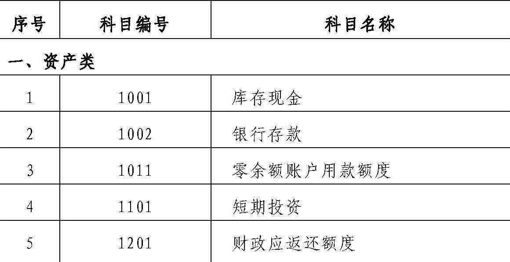
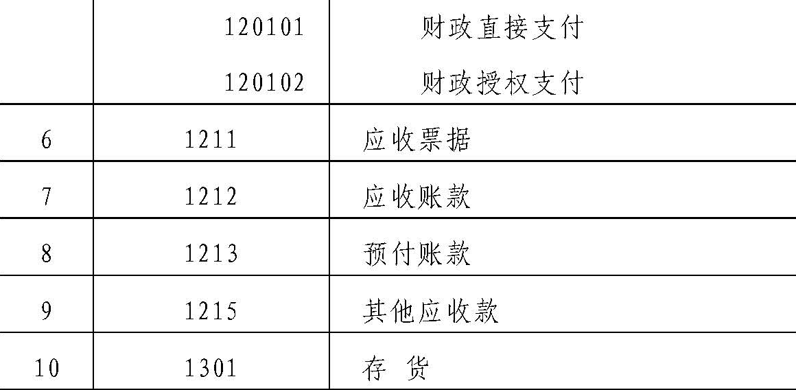
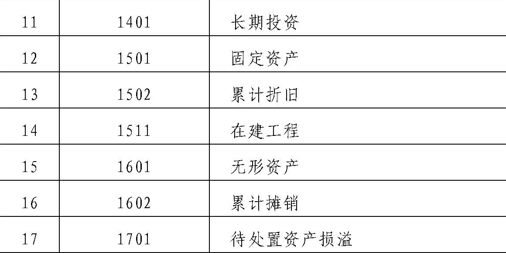
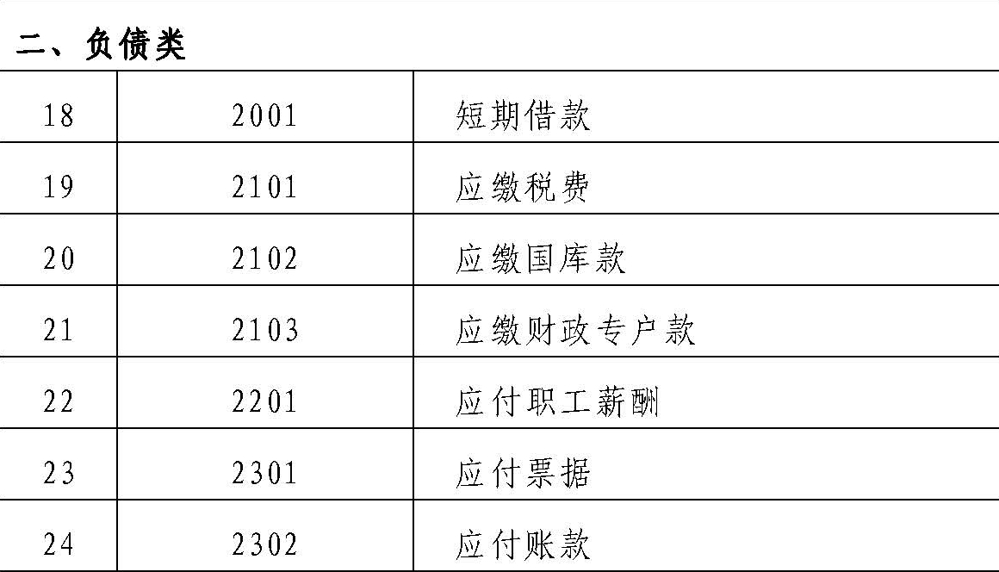
 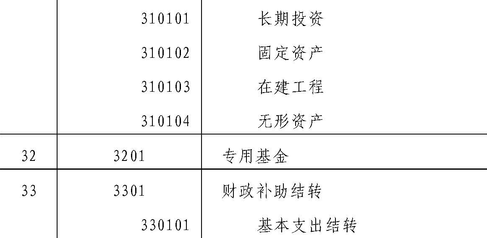
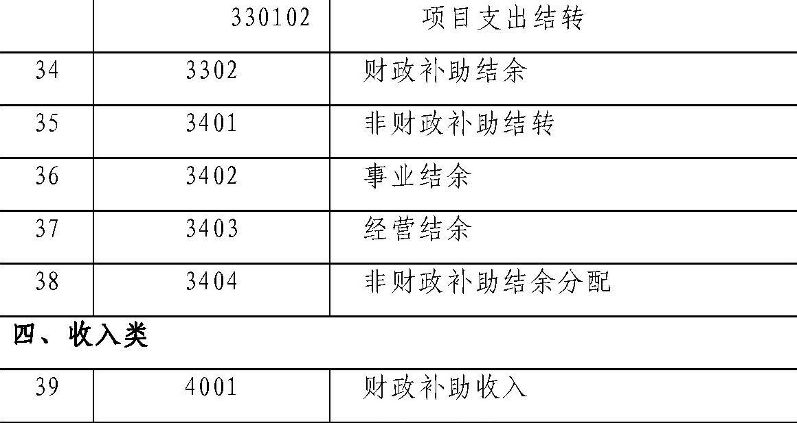
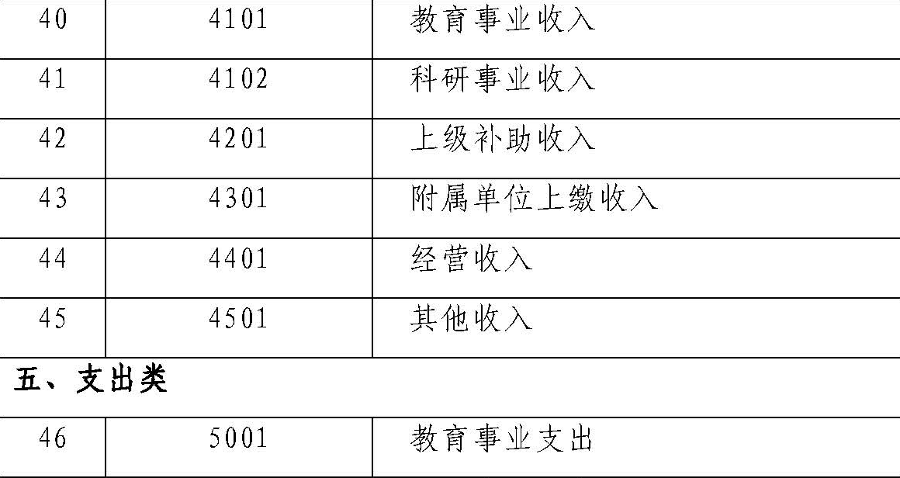
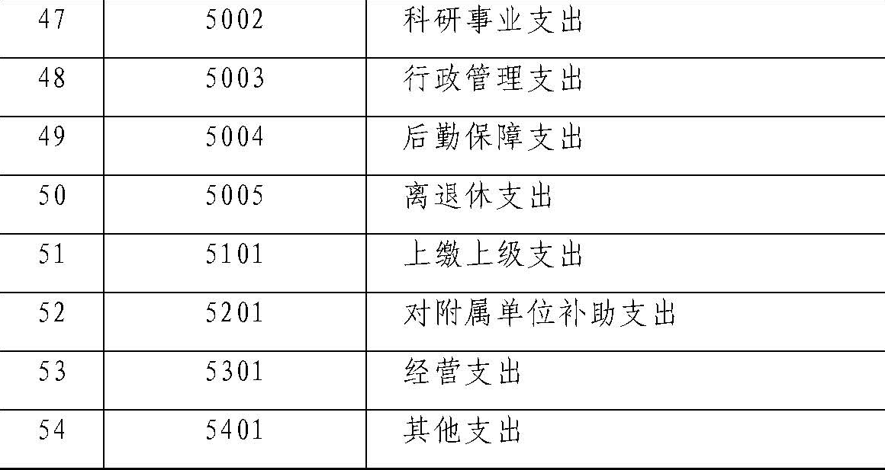
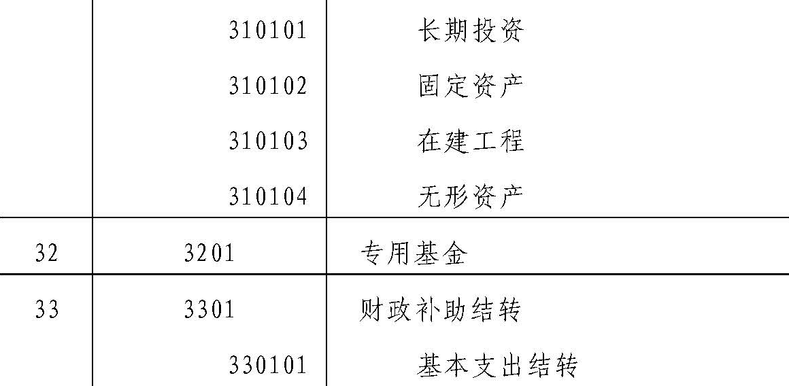
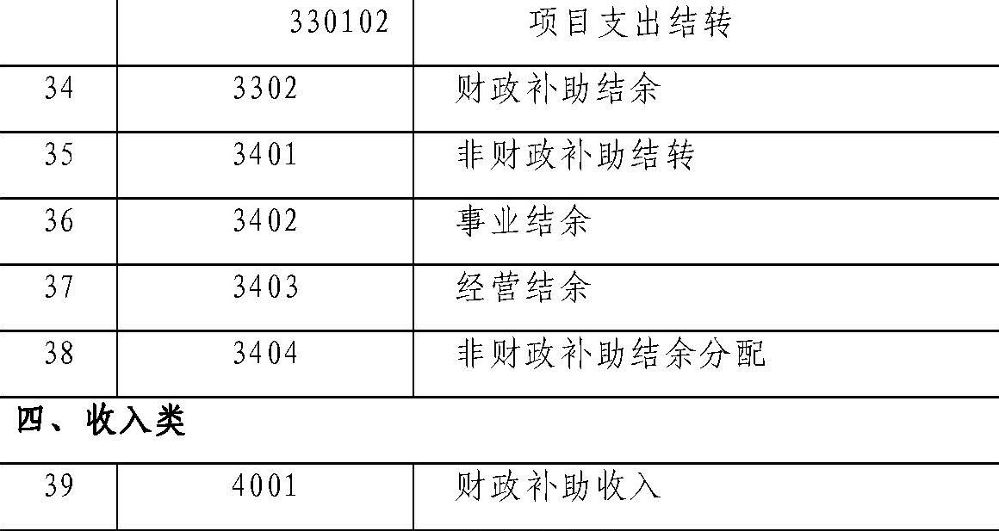
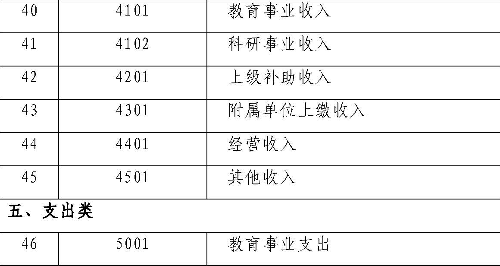
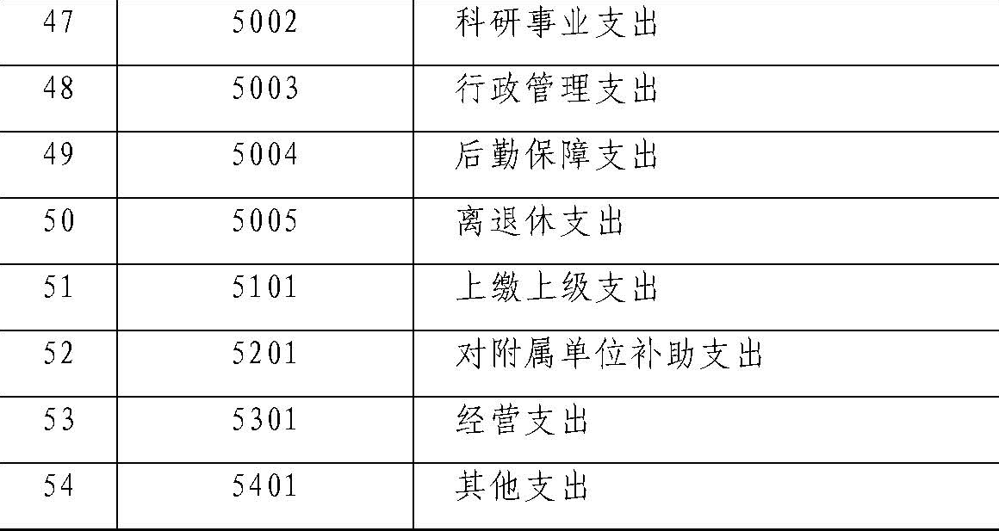
|
第三部分 会计科目使用说明
资产类
1001 库存现金
一、本科目核算高等学校的库存现金。
二、高等学校应当严格按照国家有关现金管理的规定收支现金，并按照本制度规定核算现金的各项收支业务。
三、库存现金的主要账务处理如下：
（一）从银行等金融机构提取现金，按照实际提取的金额，借记本科目，贷记“银行存款”等科目；将现金存入银行等金融机构，按照实际存入的金额，借记“银行存款”等科目，贷记本科目。
（二）因职工出差等原因借出的现金，按照实际借出的现金金额，借记“其他应收款”科目，贷记本科目；出差人员报销差旅费时，按照应报销的金额，借记有关科目，按照实际借出的现金金额，贷记“其他应收款”科目，按其差额，借记或贷记本科目。
（三）因开展业务等其他事项收到现金，按照实际收到的金额，借记本科目，贷记有关科目；因购买服务或商品等其他事项支出现金，按照实际支出的金额，借记有关科目，贷记本科目。
四、高等学校应当设置“现金日记账”，由出纳人员根据收付款凭证，按照业务发生顺序逐笔登记。每日终了，应当计算当日的现金收入合计数、现金支出合计数和结余数，并将结余数与实际库存数核对，做到账款相符。
每日账款核对中发现现金溢余或短缺的，应当及时进行处理。如发现现金溢余，属于应支付给有关人员或单位的部分，借记本科目，贷记“其他应付款”科目；属于无法查明原因的部分，借记本科目，贷记“其他收入”科目。如发现现金短缺，属于应由责任人赔偿的部分，借记“其他应收款”科目，贷记本科目；属于无法查明原因的部分，报经批准后，借记“其他支出”科目，贷记本科目。
现金收入业务较多、单独设有收款部门的高等学校，收款部门的收款员应当将每天所收现金连同收款凭据等一并交财务部门核收记账；或者将每天所收现金直接送存开户银行后，将收款凭据及向银行送存现金的凭证等一并交财务部门核收记账。
五、高等学校有外币现金的，应当分别按照人民币、各种外币设置“现金日记账”进行明细核算。有关外币现金业务的账务处理参见“银行存款”科目的相关规定。
六、本科目期末借方余额，反映高等学校实际持有的库存现金。
1002 银行存款
一、本科目核算高等学校存入银行或其他金融机构的各种存款。
二、高等学校应当严格按照国家有关支付结算办法的规定办理银行存款收支业务，并按照本制度规定核算银行存款的各项收支业务。
三、银行存款的主要账务处理如下：
（一）将款项存入银行或其他金融机构，借记本科目，贷记“库存现金”、“教育事业收入”、“科研事业收入”、“应缴财政专户款”、“经营收入”等有关科目。
（二）提取和支出存款时，借记有关科目，贷记本科目。
四、高等学校发生外币业务的，应当按照业务发生当日（或当期期初，下同）的即期汇率，将外币金额折算为人民币记账，并登记外币金额和汇率。
期末，各种外币账户的外币余额应当按照期末的即期汇率折算为人民币金额，作为外币账户期末人民币余额。调整后的各种外币账户人民币余额与原账面人民币余额的差额，作为汇兑损益计入相关支出。
（一）以外币购买物资、劳务等，按照购入当日的即期汇率将支付的外币或应支付的外币折算为人民币金额，借记有关科目，贷记本科目、“应付账款”等科目的外币账户。
（二）以外币收取相关款项等，按照收取款项或收入确认当日的即期汇率将收取的外币或应收取的外币折算为人民币金额，借记本科目、“应收账款”等科目的外币账户，贷记有关科目。
（三）期末，根据各外币账户按期末的即期汇率调整后的人民币余额与原账面人民币余额的差额，作为汇兑损益，借记或贷记本科目、“应收账款”、“应付账款”等科目，贷记或借记相关支出科目。
五、高等学校应当按开户银行或其他金融机构、存款种类及币种等，分别设置“银行存款日记账”，由出纳人员根据收付款凭证，按照业务的发生顺序逐笔登记，每日终了应结出余额。“银行存款日记账”应定期与“银行对账单”核对，至少每月核对一次。月度终了，高等学校银行存款账面余额与银行对账单余额之间如有差额，必须逐笔查明原因并进行处理，按月编制“银行存款余额调节表”，调节相符。
六、本科目期末借方余额，反映高等学校实际存放在银行或其他金融机构的款项。
1011 零余额账户用款额度
一、本科目核算实行国库集中支付的高等学校根据财政部门批复的用款计划收到和支用的零余额账户用款额度。
二、零余额账户用款额度的主要账务处理如下：
（一）在财政授权支付方式下，收到代理银行盖章的财政授权支付额度到账通知书时，根据通知书所列数额，借记本科目，贷记“财政补助收入”科目。
（二）按规定支用额度时，借记有关科目，贷记本科目。
（三）从零余额账户提取现金时，借记“库存现金”科目，贷记本科目；将现金退回学校零余额账户时，借记本科目，贷记“库存现金”科目。
（四）因购货退回等发生国库授权支付额度退回的，属于以前年度支付的款项，按照退回金额，借记本科目，贷记“财政补助结转”、“财政补助结余”、“存货”等有关科目；属于本年度支付的款项，按照退回金额，借记本科目，贷记“教育事业支出”、“科研事业支出”、“行政管理支出”、“后勤保障支出”、“离退休支出”、“存货”等有关科目。
（五）年度终了，依据代理银行提供的对账单作注销额度的相关账务处理，借记“财政应返还额度——财政授权支付”科目，贷记本科目。高等学校本年度财政授权支付预算指标数大于零余额账户用款额度下达数的，根据未下达的用款额度，借记“财政应返还额度——财政授权支付”科目，贷记“财政补助收入”科目。
下年初，高等学校依据代理银行提供的额度恢复到账通知书作恢复额度的相关账务处理，借记本科目，贷记“财政应返还额度——财政授权支付”科目。高等学校收到财政部门批复的上年末未下达零余额账户用款额度的，借记本科目，贷记“财政应返还额度——财政授权支付”科目。
三、本科目期末借方余额，反映高等学校尚未支用的零余额账户用款额度。本科目年末应无余额。
1101 短期投资
一、本科目核算高等学校依法取得的，持有时间不超过1年（含1年）的投资，主要是国债投资。
二、高等学校应当严格遵守国家法律、行政法规以及财政部门、主管部门关于对外投资的有关规定。
三、本科目应当按照国债投资的种类等进行明细核算。
四、短期投资的主要账务处理如下：
（一）短期投资在取得时，应当按照其实际成本（包括购买价款以及税金、手续费等相关税费）作为投资成本，借记本科目，贷记“银行存款”等科目。
（二）短期投资持有期间收到利息时，按实际收到的金额，借记“银行存款”科目，贷记“其他收入——投资收益”科目。
（三）出售短期投资或到期收回短期国债本息，按照实际收到的金额，借记“银行存款”科目，按照出售或收回短期国债的成本，贷记本科目，按其差额，贷记或借记“其他收入——投资收益”科目。
五、本科目期末借方余额，反映高等学校持有的短期投资成本。
1201 财政应返还额度
一、本科目核算实行国库集中支付的高等学校应收财政返还的资金额度。
二、本科目应当设置“财政直接支付”、“财政授权支付”两个明细科目，进行明细核算。
三、财政应返还额度的主要账务处理如下：
（一）财政直接支付
年度终了，高等学校根据本年度财政直接支付预算指标数与当年财政直接支付实际支出数的差额，借记本科目（财政直接支付），贷记“财政补助收入”科目。
下年度恢复财政直接支付额度后，高等学校以财政直接支付方式发生实际支出时，借记有关科目，贷记本科目（财政直接支付）。
（二）财政授权支付
年度终了，高等学校依据代理银行提供的对账单作注销额度的相关账务处理，借记本科目（财政授权支付），贷记“零余额账户用款额度”科目。高等学校本年度财政授权支付预算指标数大于零余额账户用款额度下达数的，根据未下达的用款额度，借记本科目（财政授权支付），贷记“财政补助收入”科目。
下年初，高等学校依据代理银行提供的额度恢复到账通知书作恢复额度的相关账务处理，借记“零余额账户用款额度”科目，贷记本科目（财政授权支付）。高等学校收到财政部门批复的上年末未下达零余额账户用款额度时，借记“零余额账户用款额度”科目，贷记本科目（财政授权支付）。
四、本科目期末借方余额，反映高等学校应收财政返还的资金额度。
1211 应收票据
一、本科目核算高等学校因开展经营活动销售产品、提供服务等而收到的商业汇票，包括银行承兑汇票和商业承兑汇票。
二、本科目应当按照开出、承兑商业汇票的单位等进行明细核算。
三、应收票据的主要账务处理如下：
（一）因销售产品、提供服务等收到商业汇票，按照商业汇票的票面金额，借记本科目，按照确认的收入金额，贷记“经营收入”等科目，按照应缴增值税金额，贷记“应缴税费——应缴增值税”科目。
（二）持未到期的商业汇票向银行贴现，按照实际收到的金额（即扣除贴现息后的净额），借记“银行存款”科目，按照贴现息，借记“经营支出”等科目，按照商业汇票的票面金额，贷记本科目。
（三）将持有的商业汇票背书转让以取得所需物资时，按照取得物资的成本，借记有关科目，按照商业汇票的票面金额，贷记本科目，如有差额，借记或贷记“银行存款”等科目。
（四）商业汇票到期时，应当分别以下情况处理：
1.收回应收票据，按照实际收到的商业汇票票面金额，借记“银行存款”科目，贷记本科目。
2.因付款人无力支付票款，收到银行退回的商业承兑汇票、委托收款凭证、未付票款通知书或拒付款证明等，按照商业汇票的票面金额，借记“应收账款”科目，贷记本科目。
四、高等学校应当设置“应收票据备查簿”，逐笔登记每一应收票据的种类、号数、出票日期、到期日、票面金额、交易合同号和付款人、承兑人、背书人姓名或单位名称、背书转让日、贴现日期、贴现率和贴现净额、收款日期、收回金额和退票情况等资料。应收票据到期结清票款或退票后，应当在备查簿内逐笔注销。
五、本科目期末借方余额，反映高等学校持有的商业汇票票面金额。
1212 应收账款
一、本科目核算高等学校因开展经营活动销售产品、提供服务等而应收取的款项。
二、本科目应当按照购货、接受服务单位（或个人）进行明细核算。
三、应收账款的主要账务处理如下：
（一）发生应收账款时，按照应收未收金额，借记本科目，按照确认的收入金额，贷记“经营收入”等科目，按照应缴增值税金额，贷记“应缴税费——应缴增值税”科目。
（二）收回应收账款时，按照实际收到的金额，借记“银行存款”等科目，贷记本科目。
四、逾期三年或以上、有确凿证据表明确实无法收回的应收账款，按规定报经批准后予以核销。核销的应收账款应在“已核销应收账款备查簿”中保留登记。
（一）转入待处置资产时，按照待核销的应收账款金额，借记“待处置资产损溢”科目，贷记本科目。
（二）报经批准予以核销时，借记“其他支出”科目，贷记“待处置资产损溢”科目。
（三）已核销应收账款在以后期间收回的，按照实际收回的金额，借记“银行存款”等科目，贷记“其他收入”科目。
五、本科目期末借方余额，反映高等学校尚未收回的应收账款。
1213 预付账款
一、本科目核算高等学校按照购货、劳务合同或协议规定预付给供应单位的款项。
二、本科目应当按照供应单位（或个人）进行明细核算。
高等学校应当通过明细核算或辅助登记方式，登记预付账款的资金性质（区分财政补助资金、非财政专项资金和其他资金）。
三、预付账款的主要账务处理如下：
（一）发生预付账款时，按照实际预付的金额，借记本科目，贷记“零余额账户用款额度”、“财政补助收入”、“银行存款”等科目。
（二）收到所购物资或劳务，按照购入物资或劳务的成本，借记有关科目，按照相应预付账款金额，贷记本科目，按照补付的款项，贷记“零余额账户用款额度”、“财政补助收入”、“银行存款”等科目。
收到所购固定资产、无形资产的，按照确定的资产成本，借记“固定资产”、“无形资产”科目，贷记“非流动资产基金——固定资产、无形资产”科目；同时，按资产购置支出，借记“教育事业支出”、“科研事业支出”、“行政管理支出”、“后勤保障支出”、“经营支出”等科目，按照相应预付账款金额，贷记本科目，按照补付的款项，贷记“零余额账户用款额度”、“财政补助收入”、“银行存款”等科目。
四、逾期三年或以上、有确凿证据表明因供货单位破产、撤销等原因已无望再收到所购物资，且确实无法收回的预付账款，按规定报经批准后予以核销。核销的预付账款应在“已核销预付账款备查簿”中保留登记。
（一）转入待处置资产时，按照待核销的预付账款金额，借记“待处置资产损溢”科目，贷记本科目。
（二）报经批准予以核销时，借记“其他支出”科目，贷记“待处置资产损溢”科目。
（三）已核销预付账款在以后期间收回的，按照实际收回的金额，借记“银行存款”等科目，贷记“其他收入”科目。
五、本科目期末借方余额，反映高等学校实际预付但尚未结算的款项。
1215 其他应收款
一、本科目核算高等学校除财政应返还额度、应收票据、应收账款、预付账款以外的其他各项应收及暂付款项，如职工预借的差旅费、拨付给内部有关部门的备用金、拨付给校内独立核算单位用于保障其基本运行的补贴经费、应向职工收取的各种垫付款项、应向附属单位收取的垫付的人员经费等。
二、本科目应当按照其他应收款的类别以及债务单位（或个人）进行明细核算。
三、其他应收款的主要账务处理如下：
（一）发生其他各项应收及暂付款项时，借记本科目，贷记“银行存款”、“库存现金”等科目。
（二）收回或转销其他各项应收及暂付款项时，借记“库存现金”、“银行存款”等科目，贷记本科目。
（三）向校内独立核算单位拨付补贴经费时，借记本科目，贷记“银行存款”等科目。
收到校内独立核算单位有关使用补贴经费实际支出金额与用途的上报信息时，借记“后勤保障支出”等科目，贷记本科目。
（四）高等学校内部实行备用金制度的，有关部门使用备用金以后应当及时到财务部门报销并补足备用金。财务部门核定并发放备用金时，借记本科目，贷记“库存现金”等科目。根据报销数用现金补足备用金定额时，借记有关科目，贷记“库存现金”等科目，报销数和拨补数都不再通过本科目核算。
四、逾期三年或以上、有确凿证据表明确实无法收回的其他应收款，按规定报经批准后予以核销。核销的其他应收款应在“已核销其他应收款备查簿”中保留登记。
（一）转入待处置资产时，按照待核销的其他应收款金额，借记“待处置资产损溢”科目，贷记本科目。
（二）报经批准予以核销时，借记“其他支出”科目，贷记“待处置资产损溢”科目。
（三）已核销其他应收款在以后期间收回的，按照实际收回的金额，借记“银行存款”等科目，贷记“其他收入”科目。
五、本科目期末借方余额，反映高等学校尚未收回的其他应收款。
1301 存货
一、本科目核算高等学校在开展业务活动及其他活动中为耗用而储存的各种材料、燃料、包装物、低值易耗品及达不到固定资产标准的用具、装具、动植物等的实际成本。
高等学校随买随用的零星办公用品，可以在购进时直接列作支出，不通过本科目核算。
二、本科目应当按照存货的种类、规格、保管地点等进行明细核算。
发生自行加工存货业务的高等学校，应当在本科目下设置“生产成本”明细科目，归集核算自行加工存货所发生的实际成本（包括耗用的直接材料费用、发生的直接人工费用和分配的间接费用）。
三、存货的主要账务处理如下：
（一）存货在取得时，应当按照其实际成本入账。
1.购入的存货，其成本包括购买价款、相关税费、运输费、装卸费、保险费以及其他使得存货达到目前场所和状态所发生的其他支出。高等学校按照税法规定属于增值税一般纳税人的，其购进非自用（如用于生产对外销售的产品）材料所支付的税法规定可抵扣的增值税进项税额不计入材料成本。
购入的存货验收入库，按确定的成本，借记本科目，贷记“银行存款”、“应付账款”、“财政补助收入”、“零余额账户用款额度”等科目。
属于增值税一般纳税人的高等学校购入非自用材料的，按确定的成本（不含税法规定可抵扣增值税进项税额），借记本科目，按增值税专用发票上注明的增值税额，借记“应缴税费——应缴增值税（进项税额）”科目，按实际支付或应付的金额，贷记“银行存款”、“应付账款”等科目。
2.自行加工的存货，其成本包括耗用的直接材料费用、发生的直接人工费用和按照一定方法分配的与存货加工有关的间接费用。
自行加工的存货在加工过程中发生各种费用时，借记本科目（生产成本），贷记本科目（领用材料相关的明细科目）、“应付职工薪酬”、“银行存款”等科目。
加工完成的存货验收入库，按照所发生的实际成本，借记本科目（相关明细科目），贷记本科目（生产成本）。
3.接受捐赠、无偿调入的存货，其成本按照有关凭据注明的金额加上相关税费、运输费等确定；没有相关凭据的，其成本比照同类或类似存货的市场价格加上相关税费、运输费等确定；没有相关凭据、同类或类似存货的市场价格也无法可靠取得的，该存货按照名义金额（即人民币1元，下同）入账。
接受捐赠、无偿调入的存货验收入库，按照确定的成本，借记本科目，按照发生的相关税费、运输费等，贷记“银行存款”等科目，按照其差额，贷记“其他收入”科目。
按照名义金额入账的情况下，按照名义金额，借记本科目，贷记“其他收入”科目；按照发生的相关税费、运输费等，借记“其他支出”科目，贷记“银行存款”等科目。
（二）存货在发出时，应当根据实际情况采用先进先出法、加权平均法或者个别计价法确定发出存货的实际成本。计价方法一经确定，不得随意变更。低值易耗品的成本于领用时一次摊销。
1.开展业务活动等领用、发出存货，按领用、发出存货的实际成本，借记“教育事业支出”、“科研事业支出”、“行政管理支出”、“后勤保障支出”、“离退休支出”、“经营支出”等科目，贷记本科目。
2.对外捐赠、无偿调出存货，转入待处置资产时，按照存货的账面余额，借记“待处置资产损溢”科目，贷记本科目。
属于增值税一般纳税人的高等学校无偿调出购进的非自用材料，转入待处置资产时，按照存货的账面余额与相关增值税进项税额转出金额的合计金额，借记“待处置资产损溢”科目，按存货的账面余额，贷记本科目，按转出的增值税进项税额，贷记“应缴税费——应缴增值税（进项税额转出）”科目。
实际捐出、调出存货时，按照“待处置资产损溢”科目的相应余额，借记“其他支出”科目，贷记“待处置资产损溢”科目。
四、高等学校的存货应当定期进行清查盘点，至少每年盘点一次。对于发生的存货盘盈、盘亏或者报废、毁损，应当及时查明原因，按规定报经批准后进行账务处理。
（一）盘盈的存货，按照同类或类似存货的实际成本或市场价格确定入账价值；同类或类似存货的实际成本、市场价格均无法可靠取得的，按照名义金额入账。
盘盈的存货，按照确定的入账价值，借记本科目，贷记“其他收入”科目。
（二）盘亏或者毁损、报废的存货，转入待处置资产时，按照待处置存货的账面余额，借记“待处置资产损溢”科目，贷记本科目。
属于增值税一般纳税人的高等学校购进的非自用材料发生盘亏或者毁损、报废的，转入待处置资产时，按照存货的账面余额与相关增值税进项税额转出金额的合计金额，借记“待处置资产损溢”科目，按存货的账面余额，贷记本科目，按转出的增值税进项税额，贷记“应缴税费——应缴增值税（进项税额转出）”科目。
报经批准予以处置时，按照“待处置资产损溢”科目的相应余额，借记“其他支出”科目，贷记“待处置资产损溢”科目。
处置存货过程中所取得的收入、发生的费用，以及处置收入扣除相关处置费用后的净收入的账务处理，参见“待处置资产损溢”科目。
五、本科目期末借方余额，反映高等学校存货的实际成本。
1401 长期投资
一、本科目核算高等学校依法取得的，持有时间超过1年（不含1年）的股权和债权性质的投资。
二、高等学校应当严格遵守国家法律、行政法规以及财政部门、主管部门有关高等学校对外投资的规定。
三、本科目应当按照长期投资的种类和被投资单位等进行明细核算。
四、长期投资的主要账务处理如下：
（一）长期股权投资
1.长期股权投资在取得时，应当按照其实际成本作为投资成本。
（1）以货币资金取得的长期股权投资，按照实际支付的全部价款（包括购买价款以及税金、手续费等相关税费）作为投资成本，借记本科目，贷记“银行存款”等科目；同时，按照投资成本金额，借记“事业基金——一般基金”科目，贷记“非流动资产基金——长期投资”科目。
（2）以固定资产取得的长期股权投资，按照评估价值加上相关税费作为投资成本，借记本科目，贷记“非流动资产基金——长期投资”科目，按照发生的相关税费，借记“其他支出”科目，贷记“银行存款”、“应缴税费”等科目；同时，按照投出固定资产对应的非流动资产基金，借记“非流动资产基金——固定资产”科目，按照投出固定资产已计提折旧，借记“累计折旧”科目，按照投出固定资产的账面余额，贷记“固定资产”科目。
（3）以已入账无形资产取得的长期股权投资，按照评估价值加上相关税费作为投资成本，借记本科目，贷记“非流动资产基金——长期投资”科目，按照发生的相关税费，借记“其他支出”科目，贷记“银行存款”、“应缴税费”等科目；同时，按照投出无形资产对应的非流动资产基金，借记“非流动资产基金——无形资产”科目，按照投出无形资产已计提摊销，借记“累计摊销”科目，按照投出无形资产的账面余额，贷记“无形资产”科目。
以未入账无形资产取得的长期股权投资，按照评估价值加上相关税费作为投资成本，借记本科目，贷记“非流动资产基金——长期投资”科目，按照发生的相关税费，借记“其他支出”科目，贷记“银行存款”、“应缴税费”等科目。
2.长期股权投资持有期间，收到利润等投资收益时，按照实际收到的金额，借记“银行存款”等科目，贷记“其他收入——投资收益”科目。
3.转让长期股权投资，转入待处置资产时，按照待转让长期股权投资的账面余额，借记“待处置资产损溢——处置资产价值”科目，贷记本科目。
实际转让时，按照所转让长期股权投资对应的非流动资产基金，借记“非流动资产基金——长期投资”科目，贷记“待处置资产损溢——处置资产价值”科目。
转让长期股权投资过程中取得价款、发生相关税费，以及转让价款扣除相关税费后的净收入的账务处理，参见“待处置资产损溢”科目。
4.因被投资单位破产清算等原因，有确凿证据表明长期股权投资发生损失，按规定报经批准后予以核销。将待核销长期股权投资转入待处置资产时，按照待核销的长期股权投资账面余额，借记“待处置资产损溢”科目，贷记本科目。
报经批准予以核销时，借记“非流动资产基金——长期投资”科目，贷记“待处置资产损溢”科目。
（二）长期债券投资
1.长期债券投资在取得时，应当按照其实际成本作为投资成本。
以货币资金购入的长期债券投资，按照实际支付的全部价款（包括购买价款以及税金、手续费等相关税费）作为投资成本，借记本科目，贷记“银行存款”等科目；同时，按照投资成本金额，借记“事业基金——一般基金”科目，贷记“非流动资产基金——长期投资”科目。
2.长期债券投资持有期间收到利息时，按照实际收到的金额，借记“银行存款”等科目，贷记“其他收入——投资收益”科目。
3.对外转让或到期收回长期债券投资本息，按照实际收到的金额，借记“银行存款”等科目，按照收回长期投资的成本，贷记本科目，按照其差额，贷记或借记“其他收入——投资收益”科目；同时，按照收回长期投资对应的非流动资产基金，借记“非流动资产基金——长期投资”科目，贷记“事业基金——一般基金”科目。
五、本科目期末借方余额，反映高等学校持有的长期投资成本。
1501 固定资产
一、本科目核算高等学校固定资产的原价。
固定资产是指高等学校持有的使用期限超过1年（不含1年）、单位价值在规定标准以上，并在使用过程中基本保持原有物质形态的资产。单位价值虽未达到规定标准，但使用期限超过1年（不含1年）的大批同类物资，作为固定资产核算和管理。
二、高等学校的固定资产一般分为六类：房屋及构筑物；专用设备；通用设备；文物和陈列品；图书、档案；家具、用具、装具及动植物。有关说明如下：
（一）固定资产的各组成部分具有不同的使用寿命、适用不同折旧率且可以分别确定各自原价的，应当分别将各组成部分确认为单项固定资产。
（二）对于应用软件，如果其构成相关硬件不可缺少的组成部分，应当将该软件价值包括在所属硬件价值中，一并作为固定资产进行核算；如果其不构成相关硬件不可缺少的组成部分，应当将该软件作为无形资产核算。
（三）高等学校以经营租赁租入的固定资产，不作为固定资产核算，应当另设备查簿进行登记。
（四）购入需要安装的固定资产，应当先通过“在建工程”科目核算，安装完毕交付使用时再转入本科目核算。
（五）高等学校购建的房屋及构筑物，不能够分清购建成本中的房屋及构筑物部分与土地使用权部分的，应当全部作为固定资产核算；能够分清购建成本中的房屋及构筑物部分与土地使用权部分的，应当将其中的房屋及构筑物部分作为固定资产核算，将其中的土地使用权部分作为无形资产核算。
三、高等学校应当根据固定资产定义及主管部门、财政部门的有关规定，结合本单位的具体情况，制定适合于本单位的固定资产目录、具体分类方法，作为进行固定资产核算的依据。
高等学校应当设置“固定资产登记簿”和“固定资产卡片”，按照固定资产类别、项目和使用部门等进行明细核算。出租、出借的固定资产，应当设置备查簿进行登记。
四、固定资产的主要账务处理如下：
（一）固定资产在取得时，应当按照其实际成本入账。
1.购入的固定资产，其成本包括购买价款、相关税费以及固定资产交付使用前所发生的可归属于该项资产的运输费、装卸费、安装调试费和专业人员服务费等。
以一笔款项购入多项没有单独标价的固定资产，按照各项固定资产同类或类似资产市场价格的比例对总成本进行分配，分别确定各项固定资产的入账成本。
购入不需安装的固定资产，按照确定的固定资产成本，借记本科目，贷记“非流动资产基金——固定资产”科目；同时，按照实际支付金额，借记“教育事业支出”、“科研事业支出”、“行政管理支出”、“后勤保障支出”、“经营支出”等科目，贷记“财政补助收入”、“零余额账户用款额度”、“银行存款”等科目。
购入需要安装的固定资产，先通过“在建工程”科目核算。安装完工交付使用时，借记本科目，贷记“非流动资产基金——固定资产”科目；同时，借记“非流动资产基金——在建工程”科目，贷记“在建工程”科目。
购入固定资产扣留质量保证金的，应当在取得固定资产时，按照确定的成本，借记本科目[不需安装]或“在建工程”科目[需要安装]，贷记“非流动资产基金——固定资产、在建工程”科目。同时取得固定资产全款发票的，应当同时按照构成资产成本的全部支出金额，借记“教育事业支出”、“科研事业支出”、“行政管理支出”、“后勤保障支出”、“经营支出”等科目，按照实际支付金额，贷记“财政补助收入”、“零余额账户用款额度”、“银行存款”等科目，按照扣留的质量保证金，贷记“其他应付款”[扣留期在1年以内（含1年）]或“长期应付款”[扣留期超过1年]科目；取得的发票金额不包括质量保证金的，应当同时按照不包括质量保证金的支出金额，借记“教育事业支出”、“科研事业支出”、“行政管理支出”、“后勤保障支出”、“经营支出”等科目，贷记“财政补助收入”、“零余额账户用款额度”、“银行存款”等科目。质保期满支付质量保证金时，借记“其他应付款”、“长期应付款”科目，或借记“教育事业支出”、“科研事业支出”、“行政管理支出”、“后勤保障支出”、“经营支出”等科目，贷记“财政补助收入”、“零余额账户用款额度”、“银行存款”等科目。
质保期满因固定资产质量有问题等原因未支付质量保证金的，应当相应调减固定资产的账面余额，并重新计算折旧额。
2.自行建造的固定资产，其成本包括建造该项资产至交付使用前所发生的全部必要支出。
工程完工交付使用时，按自行建造过程中发生的实际支出，借记本科目，贷记“非流动资产基金——固定资产”科目；同时，借记“非流动资产基金——在建工程”科目，贷记“在建工程”科目。已交付使用但尚未办理竣工决算手续的固定资产，按照估计价值入账，待确定实际成本后再进行调整。
3.在原有固定资产基础上进行改建、扩建、修缮后的固定资产，其成本按照原固定资产账面价值（“固定资产”科目账面余额减去“累计折旧”科目账面余额后的净值）加上改建、扩建、修缮发生的支出，再扣除固定资产拆除部分的账面价值后的金额确定。
将固定资产转入改建、扩建、修缮时，按固定资产的账面价值，借记“在建工程”科目，贷记“非流动资产基金——在建工程”科目；同时，按固定资产对应的非流动资产基金，借记“非流动资产基金——固定资产”科目，按固定资产已计提折旧，借记“累计折旧”科目，按固定资产的账面余额，贷记本科目。
2本制度所称账面价值，是指某会计科目的账面余额减去相关备抵科目（如“累计折旧”、“累计摊销”科目）账面余额后的净值。本制度所称账面余额，是指某会计科目的账面实际余额。
工程完工交付使用时，借记本科目，贷记“非流动资产基金——固定资产”科目；同时，借记“非流动资产基金——在建工程”科目，贷记“在建工程”科目。
4.以融资租赁租入的固定资产，其成本按照租赁协议或者合同确定的租赁价款、相关税费以及固定资产交付使用前所发生的可归属于该项资产的运输费、途中保险费、安装调试费等确定。
融资租入的固定资产，按照确定的成本，借记本科目[不需安装]或“在建工程”科目[需安装]，按照租赁协议或者合同确定的租赁价款，贷记“长期应付款”科目，按照其差额，贷记“非流动资产基金——固定资产、在建工程”科目。同时，按照实际支付的相关税费、运输费、途中保险费、安装调试费等，借记“教育事业支出”、“科研事业支出”、“行政管理支出”、“后勤保障支出”、“经营支出”等科目，贷记“财政补助收入”、“零余额账户用款额度”、“银行存款”等科目。
定期支付租金时，按照支付的租金金额，借记“教育事业支出”、“科研事业支出”、“行政管理支出”、“后勤保障支出”、“经营支出”等科目，贷记“财政补助收入”、“零余额账户用款额度”、“银行存款”等科目；同时，借记“长期应付款”科目，贷记“非流动资产基金——固定资产”科目。
跨年度分期付款购入固定资产的账务处理，参照融资租入固定资产。
5.接受捐赠、无偿调入的固定资产，其成本按照有关凭据注明的金额加上相关税费、运输费等确定；没有相关凭据的，其成本比照同类或类似固定资产的市场价格加上相关税费、运输费等确定；没有相关凭据、同类或类似固定资产的市场价格也无法可靠取得的，该固定资产按照名义金额入账。
接受捐赠、无偿调入的固定资产，按照确定的固定资产成本，借记本科目[不需安装]或“在建工程”科目[需安装]，贷记“非流动资产基金——固定资产、在建工程”科目；按照发生的相关税费、运输费等，借记“其他支出”科目，贷记“银行存款”等科目。
（二）按月计提固定资产折旧时，按照实际计提金额，借记“非流动资产基金——固定资产”科目，贷记“累计折旧”科目。
（三）与固定资产有关的后续支出，应当分别以下情况处理：
1.为增加固定资产使用效能或延长其使用年限而发生的改建、扩建或修缮等后续支出，应当计入固定资产成本，通过“在建工程”科目核算，完工交付使用时转入本科目。有关账务处理参见“在建工程”科目。
2.为维护固定资产的正常使用而发生的日常修理等后续支出，应当计入当期支出但不计入固定资产成本，借记“教育事业支出”、“科研事业支出”、“行政管理支出”、“后勤保障支出”、“经营支出”等科目，贷记“财政补助收入”、“零余额账户用款额度”、“银行存款”等科目。
（四）报经批准出售、无偿调出、对外捐赠固定资产或以固定资产对外投资，应当分别以下情况处理：
1.出售、无偿调出、对外捐赠固定资产，转入待处置资产时，按照待处置固定资产的账面价值，借记“待处置资产损溢”科目，按照固定资产已计提折旧，借记“累计折旧”科目，按照固定资产的账面余额，贷记本科目。
实际出售、调出、捐出时，按照处置固定资产对应的非流动资产基金，借记“非流动资产基金——固定资产”科目，贷记“待处置资产损溢”科目。
出售固定资产过程中取得价款、发生相关税费，以及出售价款扣除相关税费后的净收入的账务处理，参见“待处置资产损溢”科目。
2.以固定资产对外投资，按照评估价值加上相关税费作为投资成本，借记“长期投资”科目，贷记“非流动资产基金——长期投资”科目，按发生的相关税费，借记“其他支出”科目，贷记“银行存款”、“应缴税费”等科目；同时，按照投出固定资产对应的非流动资产基金，借记“非流动资产基金——固定资产”科目，按照投出固定资产已计提折旧，借记“累计折旧”科目，按照投出固定资产的账面余额，贷记本科目。
五、高等学校的固定资产应当定期进行清查盘点，至少每年盘点一次。对于发生的固定资产盘盈、盘亏或者报废、毁损，应当及时查明原因，按规定报经批准后进行账务处理。
（一）盘盈的固定资产，按照同类或类似固定资产的市场价格确定入账价值；同类或类似固定资产的市场价格无法可靠取得的，按照名义金额入账。
盘盈的固定资产，按照确定的入账价值，借记本科目，贷记“非流动资产基金——固定资产”科目。
（二）盘亏或者毁损、报废的固定资产，转入待处置资产时，按照待处置固定资产的账面价值，借记“待处置资产损溢”科目，按照固定资产已计提折旧，借记“累计折旧”科目，按照固定资产的账面余额，贷记本科目。
报经批准予以处置时，按照处置固定资产对应的非流动资产基金，借记“非流动资产基金——固定资产”科目，贷记“待处置资产损溢”科目。
处置毁损、报废固定资产过程中所取得的收入、发生的相关费用，以及处置收入扣除相关费用后的净收入的账务处理，参见“待处置资产损溢”科目。
六、本科目期末借方余额，反映高等学校固定资产的原价。
1502 累计折旧
一、本科目核算高等学校固定资产计提的累计折旧。
二、本科目应当结合高等学校进行内部成本费用管理的需要，并按照所对应固定资产的类别、项目等进行明细核算。
三、高等学校应当对除下列各项资产以外的其他固定资产计提折旧：
（一）文物和陈列品；
（二）动植物；
（三）图书、档案；
（四）以名义金额计量的固定资产。
四、折旧是指在固定资产使用寿命内，按照确定的方法对应折旧金额进行系统分摊。有关说明如下：
（一）高等学校应当根据固定资产的性质和实际使用情况，合理确定其折旧年限。省级以上财政部门、主管部门对高等学校固定资产折旧年限作出规定的，从其规定。
（二）高等学校一般应当采用年限平均法或工作量法计提固定资产折旧。
（三）高等学校固定资产的应折旧金额为其成本，计提固定资产折旧不考虑预计净残值。
（四）高等学校一般应当按月计提固定资产折旧。当月增加的固定资产，当月不提折旧，从下月起计提折旧；当月减少的固定资产，当月照提折旧，从下月起不提折旧。
（五）固定资产提足折旧后，无论能否继续使用，均不再计提折旧；提前报废的固定资产，也不再补提折旧。已提足折旧的固定资产，可以继续使用的，应当继续使用，规范管理。
（六）计提融资租入固定资产折旧时，应当采用与自有固定资产相一致的折旧政策。能够合理确定租赁期届满时将会取得租入固定资产所有权的，应当在租入固定资产尚可使用年限内计提折旧；无法合理确定租赁期届满时能够取得租入固定资产所有权的，应当在租赁期与租入固定资产尚可使用年限两者中较短的期间内计提折旧。
（七）因发生后续支出而增加固定资产成本的，应当按照重新确定的固定资产成本以及重新确定的折旧年限，重新计算折旧额。
五、累计折旧的主要账务处理如下：
（一）按月计提固定资产折旧时，按照应计提折旧金额，借记“非流动资产基金——固定资产”科目，贷记本科目。
（二）固定资产处置时，按照所处置固定资产的账面价值，借记“待处置资产损溢”科目，按照固定资产已计提折旧，借记本科目，按照固定资产的账面余额，贷记“固定资产”科目。
六、本科目期末贷方余额，反映高等学校计提的固定资产折旧累计数。
1511 在建工程
一、本科目核算高等学校已经发生必要支出，但尚未完工交付使用的各种建筑（包括新建、改建、扩建、修缮等）和设备安装工程的实际成本。
二、本科目应当按照工程性质和具体工程项目等进行明细核算。
三、高等学校的基本建设投资应当按照国家有关规定单独建账、单独核算，同时按照本制度的规定至少按月并入本科目及其他相关科目反映。高等学校应当在本科目下设置“基建工程”明细科目，核算由基建账套并入的在建工程成本。有关基建并账的具体账务处理另行规定。
四、在建工程（非基本建设项目）的主要账务处理如下：
（一）建筑工程
1.将固定资产转入改建、扩建或修缮等时，按照固定资产的账面价值，借记本科目，贷记“非流动资产基金——在建工程”科目；同时，按照固定资产对应的非流动资产基金，借记“非流动资产基金——固定资产”科目，按照固定资产已计提折旧，借记“累计折旧”科目，按照固定资产的账面余额，贷记“固定资产”科目。
2.与施工企业结算工程价款时，按照实际支付的工程价款，借记本科目，贷记“非流动资产基金——在建工程”科目；同时，借记“教育事业支出”、“科研事业支出”、“行政管理支出”、“后勤保障支出”、“经营支出”等科目，贷记“财政补助收入”、“零余额账户用款额度”、“银行存款”等科目。
支付其他工程款项时，借记本科目，贷记“非流动资产基金——在建工程”科目；同时，借记“教育事业支出”、“科研事业支出”、“行政管理支出”、“后勤保障支出”、“经营支出”等科目，贷记“财政补助收入”、“零余额账户用款额度”、“银行存款”等科目。
3.高等学校为建筑工程借入的专门借款的利息，属于建设期间发生的，计入在建工程成本，借记本科目，贷记“非流动资产基金——在建工程”科目；同时，借记“其他支出”科目，贷记“银行存款”科目。
4.建筑工程完工交付使用时，按照工程所发生的实际成本，借记“固定资产”科目，贷记“非流动资产基金——固定资产”科目；同时，借记“非流动资产基金——在建工程”科目，贷记本科目。
（二）设备安装
1.购入需要安装的设备，按照确定的成本，借记本科目，贷记“非流动资产基金——在建工程”科目；同时，按照实际支付金额，借记“教育事业支出”、“科研事业支出”、“行政管理支出”、“后勤保障支出”、“经营支出”等科目，贷记“财政补助收入”、“零余额账户用款额度”、“银行存款”等科目。
融资租入需要安装的设备，按照确定的成本，借记本科目，按照租赁协议或者合同确定的租赁价款，贷记“长期应付款”科目，按照其差额，贷记“非流动资产基金——在建工程”科目。同时，按照实际支付的相关税费、运输费、途中保险费等，借记“教育事业支出”、“科研事业支出”、“行政管理支出”、“后勤保障支出”、“经营支出”等科目，贷记“财政补助收入”、“零余额账户用款额度”、“银行存款”等科目。
2.发生安装费用，借记本科目，贷记“非流动资产基金——在建工程”科目；同时，借记“教育事业支出”、“科研事业支出”、“行政管理支出”、“后勤保障支出”、“经营支出”等科目，贷记“财政补助收入”、“零余额账户用款额度”、“银行存款”等科目。
3.设备安装完工交付使用时，借记“固定资产”科目，贷记“非流动资产基金——固定资产”科目；同时，借记“非流动资产基金——在建工程”科目，贷记本科目。
五、本科目期末借方余额，反映高等学校尚未完工的在建工程发生的实际成本。
1601 无形资产
一、本科目核算高等学校无形资产的原价。
无形资产是指高等学校持有的没有实物形态的可辨认非货币性资产，包括专利权、商标权、著作权、土地使用权、非专利技术等。
高等学校购入的不构成相关硬件不可缺少组成部分的应用软件，应当作为无形资产核算。
二、本科目应当按照无形资产的类别、项目等进行明细核算。
三、无形资产的主要账务处理如下：
（一）无形资产在取得时，应当按照其实际成本入账。
1.外购的无形资产，其成本包括购买价款、相关税费以及可归属于该项资产达到预定用途所发生的其他支出。
购入的无形资产，按照确定的无形资产成本，借记本科目，贷记“非流动资产基金——无形资产”科目；同时，按照实际支付金额，借记“教育事业支出”、“科研事业支出”、“行政管理支出”、“后勤保障支出”等科目，贷记“财政补助收入”、“零余额账户用款额度”、“银行存款”等科目。
2.委托软件公司开发软件视同外购无形资产进行处理。
支付软件开发费时，按照实际支付金额，借记“教育事业支出”、“科研事业支出”、“行政管理支出”、“后勤保障支出”等科目，贷记“财政补助收入”、“零余额账户用款额度”、“银行存款”等科目。软件开发完成交付使用时，按照软件开发费总额，借记本科目，贷记“非流动资产基金——无形资产”科目。
3.自行开发并按法律程序申请取得的无形资产，按照依法取得时发生的注册费、聘请律师费等费用确定成本。
自行开发并按法律程序申请取得的无形资产，按照确定的无形资产成本，借记本科目，贷记“非流动资产基金——无形资产”科目；同时，借记“教育事业支出”、“科研事业支出”、“行政管理支出”、“后勤保障支出”等科目，贷记“财政补助收入”、“零余额账户用款额度”、“银行存款”等科目。
依法取得前所发生的研究开发支出，应于发生时直接计入当期支出但不计入无形资产的成本，借记“教育事业支出”、“科研事业支出”、“行政管理支出”、“后勤保障支出”等科目，贷记“银行存款”等科目。
4.接受捐赠、无偿调入的无形资产，其成本按照有关凭据注明的金额加上相关税费等确定；没有相关凭据的，其成本比照同类或类似无形资产的市场价格加上相关税费等确定；没有相关凭据、同类或类似无形资产的市场价格也无法可靠取得的，该资产按照名义金额入账。
接受捐赠、无偿调入的无形资产，按照确定的无形资产成本，借记本科目，贷记“非流动资产基金——无形资产”科目；按照发生的相关税费等，借记“其他支出”科目，贷记“银行存款”等科目。
（二）按月进行无形资产摊销时，按照应摊销金额，借记“非流动资产基金——无形资产”科目，贷记“累计摊销”科目。
（三）与无形资产有关的后续支出，应分别以下情况处理：
1.为增加无形资产的使用效能而发生的后续支出，如对软件进行升级改造或扩展其功能等所发生的支出，应当计入无形资产的成本，借记本科目，贷记“非流动资产基金——无形资产”科目；同时，借记“教育事业支出”、“科研事业支出”、“行政管理支出”、“后勤保障支出”等科目，贷记“财政补助收入”、“零余额账户用款额度”、“银行存款”等科目。
2.为维护无形资产的正常使用而发生的后续支出，如对软件进行漏洞修补、技术维护等所发生的支出，应当计入当期支出但不计入无形资产的成本，借记“教育事业支出”、“科研事业支出”、“行政管理支出”、“后勤保障支出”等科目，贷记“财政补助收入”、“零余额账户用款额度”、“银行存款”等科目。
（四）报经批准转让、无偿调出、对外捐赠无形资产或以无形资产对外投资，应当分别以下情况处理：
1.转让、无偿调出、对外捐赠无形资产，转入待处置资产时，按照待处置无形资产的账面价值，借记“待处置资产损溢”科目，按照无形资产已计提摊销，借记“累计摊销”科目，按照无形资产的账面余额，贷记本科目。
实际转让、调出、捐出时，按照处置无形资产对应的非流动资产基金，借记“非流动资产基金——无形资产”科目，贷记“待处置资产损溢”科目。
转让无形资产过程中取得价款、发生相关税费，以及出售价款扣除相关税费后的净收入的账务处理，参见“待处置资产损溢”科目。
2.以已入账无形资产对外投资，按照评估价值加上相关税费作为投资成本，借记“长期投资”科目，贷记“非流动资产基金——长期投资”科目，按发生的相关税费，借记“其他支出”科目，贷记“银行存款”、“应缴税费”等科目；同时，按照投出无形资产对应的非流动资产基金，借记“非流动资产基金——无形资产”科目，按照投出无形资产已计提摊销，借记“累计摊销”科目，按照投出无形资产的账面余额，贷记本科目。
（五）无形资产预期不能为高等学校带来服务潜力或经济利益的，应当按规定报经批准后将该无形资产的账面价值予以核销。
转入待处置资产时，按照待核销无形资产的账面价值，借记“待处置资产损溢”科目，按照无形资产已计提摊销，借记“累计摊销”科目，按照无形资产的账面余额，贷记本科目。
报经批准予以核销时，按照核销无形资产对应的非流动资产基金，借记“非流动资产基金——无形资产”科目，贷记“待处置资产损溢”科目。
四、本科目期末借方余额，反映高等学校无形资产的原价。
1602 累计摊销
一、本科目核算高等学校无形资产计提的累计摊销。
二、本科目应当结合高等学校进行内部成本费用管理的需要，并按照所对应无形资产的类别、项目等进行明细核算。
三、高等学校应当对无形资产进行摊销，以名义金额计量的无形资产除外。
摊销是指在无形资产使用寿命内，按照确定的方法对应摊销金额进行系统分摊。有关说明如下：
（一）高等学校应当按照如下原则确定无形资产的摊销年限：法律规定了有效年限的，按照法律规定的有效年限作为摊销年限；法律没有规定有效年限的，按照相关合同或单位申请书中的受益年限作为摊销年限；法律没有规定有效年限、相关合同或单位申请书也没有规定受益年限的，按照不少于10年的期限摊销。
高等学校对于取得的单位价值小于1000元的无形资产，可以于取得的当月，将其成本一次性全部摊销。
（二）高等学校应当采用年限平均法对无形资产进行摊销。
（三）高等学校无形资产的应摊销金额为其成本。
（四）高等学校应当自无形资产取得当月起，按月进行无形资产摊销；无形资产减少的当月，不再摊销。
（五）无形资产全部摊销后，无论能否继续带来服务潜力或经济利益，均不再摊销；核销的无形资产，如果尚未全部摊销，也不再继续摊销。
（六）因发生后续支出而增加无形资产成本的，应当按照重新确定的无形资产成本，重新计算摊销额。
四、累计摊销的主要账务处理如下：
（一）按月进行无形资产摊销时，按照应摊销金额，借记“非流动资产基金——无形资产”科目，贷记本科目。
（二）无形资产处置时，按照所处置无形资产的账面价值，借记“待处置资产损溢”科目，按照无形资产累计摊销，借记本科目，按照无形资产的账面余额，贷记“无形资产”科目。
五、本科目期末贷方余额，反映高等学校计提的无形资产摊销累计数。
1701 待处置资产损溢
一、本科目核算高等学校待处置资产的价值及处置损溢。
高等学校资产处置包括资产的出售、出让、转让、对外捐赠、无偿调出、盘亏、报废、毁损以及货币性资产损失核销等。
二、本科目应当按照待处置资产项目进行明细核算；对于在处置过程中取得相关收入、发生相关费用的处置项目，还应设置“处置资产价值”、“处置净收入”明细科目，进行明细核算。
三、高等学校处置资产一般应当先记入本科目，按规定报经批准后及时进行账务处理。年度终了结账前一般应处理完毕。
四、待处置资产损溢的主要账务处理如下：
（一）按规定报经批准予以核销的应收及预付款项、长期股权投资、无形资产
1.转入待处置资产时，借记本科目[核销无形资产的，还应借记“累计摊销”科目]，贷记“应收账款”、“预付账款”、“其他应收款”、“长期投资”、“无形资产”等科目。
2.报经批准予以核销时，借记“其他支出”科目[应收及预付款项核销]或“非流动资产基金——长期投资、无形资产”科目[长期投资、无形资产核销]，贷记本科目。
（二）盘亏或者毁损、报废的存货、固定资产
1.转入待处置资产时，借记本科目（处置资产价值）[处置固定资产的，还应借记“累计折旧”科目]，贷记“存货”、“固定资产”等科目。
2.报经批准予以处置时，借记“其他支出”科目[处置存货]或“非流动资产基金——固定资产”科目[处置固定资产]，贷记本科目（处置资产价值）。
3.处置毁损、报废存货、固定资产过程中收到残值变价收入、保险理赔和过失人赔偿等，借记“库存现金”、“银行存款”等科目，贷记本科目（处置净收入）。
4.处置毁损、报废存货、固定资产过程中发生相关费用，借记本科目（处置净收入），贷记“库存现金”、“银行存款”等科目。
5.处置完毕，按照处置收入扣除相关处置费用后的净收入，借记本科目（处置净收入），贷记“应缴国库款”等科目；如果处置收入小于相关处置费用的，按照相关处置费用超出处置收入的净损失，借记“其他支出”科目，贷记本科目（处置净收入）。
（三）对外捐赠、无偿调出存货、固定资产、无形资产
1.转入待处置资产时，借记本科目[捐赠、调出固定资产、无形资产的，还应借记“累计折旧”、“累计摊销”科目]，贷记“存货”、“固定资产”、“无形资产”等科目。
2.实际捐出、调出时，借记“其他支出”科目[捐出、调出存货]或“非流动资产基金——固定资产、无形资产”科目[捐出、调出固定资产、无形资产]，贷记本科目。
（四）转让（出售）长期股权投资、固定资产、无形资产
1.转入待处置资产时，借记本科目（处置资产价值）[转让固定资产、无形资产的，还应借记“累计折旧”、“累计摊销”科目]，贷记“长期投资”、“固定资产”、“无形资产”等科目。
2.实际转让时，借记“非流动资产基金——长期投资、固定资产、无形资产”科目，贷记本科目（处置资产价值）。
3.转让过程中取得价款、发生相关税费，以及转让价款扣除相关税费后的净收入，或者相关税费超出转让价款的净损失的账务处理，按照国家有关规定，比照本科目“四（二）”有关毁损、报废存货、固定资产进行处理。
五、本科目期末如为借方余额，反映尚未处置完毕的各种资产价值及净损失；期末如为贷方余额，反映尚未处置完毕的各种资产净溢余。年度终了报经批准处理后，本科目一般应无余额。
负债类
2001 短期借款
一、本科目核算高等学校向银行等金融机构借入的期限在1年内（含1年)的各种借款本金。
二、本科目应当按照贷款单位和贷款种类进行明细核算。
三、短期借款的主要账务处理如下：
（一）借入各种短期借款时，按照实际借入的金额，借记“银行存款”科目，贷记本科目。
（二）银行承兑汇票到期，本单位无力支付票款的，按照银行承兑汇票的票面金额，借记“应付票据”科目，贷记本科目。
（三）支付短期借款利息时，借记“其他支出”科目，贷记“银行存款”科目。
（四）归还短期借款时，借记本科目，贷记“银行存款”科目。
四、本科目期末贷方余额，反映高等学校尚未归还的短期借款本金。
2101 应缴税费
一、本科目核算高等学校按照税法等规定计算应缴纳的各种税费，包括营业税、增值税、城市维护建设税、教育费附加、车船税、房产税、城镇土地使用税、企业所得税等。
高等学校代扣代缴的个人所得税，也通过本科目核算。
高等学校应缴纳的印花税不需要预提应缴税费，直接通过支出等有关科目核算，不在本科目核算。
二、本科目应当按照应缴纳的税费种类进行明细核算。属于增值税一般纳税人的高等学校，其应缴增值税明细账中还应设置“进项税额”、“已交税金”、“销项税额”、“进项税额转出”等专栏。
三、应缴税费的主要账务处理如下：
（一）发生营业税、城市维护建设税、教育费附加纳税义务的，按税法规定计算的应缴税费金额，借记“待处置资产损溢——处置净收入”科目[出售不动产应缴的税费]或有关支出科目，贷记本科目。实际缴纳时，借记本科目，贷记“银行存款”科目。
（二）属于增值税一般纳税人的高等学校购入非自用材料的，按确定的成本（不含税法规定可抵扣增值税进项税额），借记“存货”科目，按增值税专用发票上注明的增值税额，借记本科目（应缴增值税——进项税额），按实际支付或应付的金额，贷记“银行存款”、“应付账款”等科目。
属于增值税一般纳税人的高等学校所购进的非自用材料发生盘亏、毁损、报废、无偿调出等税法规定不得从增值税销项税额中抵扣进项税额的，将所购进的非自用材料转入待处置资产时，按照材料的账面余额与相关增值税进项税额转出金额的合计金额，借记“待处置资产损溢”科目，按材料的账面余额，贷记“存货”科目，按转出的增值税进项税额，贷记本科目（应缴增值税——进项税额转出）。
属于增值税一般纳税人的高等学校销售应税产品或提供应税服务，按包含增值税的价款总额，借记“银行存款”、“应收账款”、“应收票据”等科目，按扣除增值税销项税额后的价款金额，贷记“经营收入”等科目，按增值税销项税额，贷记本科目（应缴增值税——销项税额）。
属于增值税一般纳税人的高等学校实际缴纳增值税时，借记本科目（应缴增值税——已交税金），贷记“银行存款”科目。
属于增值税小规模纳税人的高等学校销售应税产品或提供应税服务，按实际收到或应收的价款，借记“银行存款”、“应收账款”、“应收票据”等科目，按实际收到或应收价款扣除增值税额后的金额，贷记“经营收入”等科目，按应缴增值税金额，贷记本科目（应缴增值税）。实际缴纳增值税时，借记本科目（应缴增值税），贷记“银行存款”科目。
（三）发生房产税、城镇土地使用税、车船税纳税义务的，按税法规定计算的应缴税金数额，借记有关科目，贷记本科目。实际缴纳时，借记本科目，贷记“银行存款”科目。
（四）代扣代缴个人所得税的，按税法规定计算应代扣代缴的个人所得税金额，借记“应付职工薪酬”科目，贷记本科目。实际缴纳时，借记本科目，贷记“银行存款”科目。
（五）发生企业所得税纳税义务的，按税法规定计算的应缴税金数额，借记“非财政补助结余分配”科目，贷记本科目。实际缴纳时，借记本科目，贷记“银行存款”科目。
（六）发生其他纳税义务的，按照应缴纳的税费金额，借记有关科目，贷记本科目。实际缴纳时，借记本科目，贷记“银行存款”等科目。
四、本科目期末借方余额，反映高等学校多缴纳的税费金额；本科目期末贷方余额，反映高等学校应缴未缴的税费金额。
2102 应缴国库款
一、本科目核算高等学校按规定应缴入国库的款项（应缴税费除外）。
二、本科目应当按照应缴国库的各款项类别进行明细核算。
三、应缴国库款的主要账务处理如下：
（一）按规定计算确定或实际取得应缴国库的款项时，借记有关科目，贷记本科目。
（二）高等学校处置资产取得的应上缴国库的处置净收入的账务处理，参见“待处置资产损溢”科目。
（三）上缴款项时，借记本科目，贷记“银行存款”等科目。
四、本科目期末贷方余额，反映高等学校应缴入国库但尚未缴纳的款项。
2103 应缴财政专户款
一、本科目核算高等学校按规定应缴入财政专户的款项。
二、本科目应当按照应缴财政专户的各款项类别进行明细核算。
三、应缴财政专户款的主要账务处理如下：
（一）取得应缴财政专户的款项时，借记有关科目，贷记本科目。
（二）上缴款项时，借记本科目，贷记“银行存款”等科目。
（三）按规定向学生退还纳入财政专户管理的学宿费时，借记本科目，贷记“银行存款”等科目。
四、本科目期末贷方余额，反映高等学校应缴入财政专户但尚未缴纳的款项。
2201 应付职工薪酬
一、本科目核算高等学校按有关规定应付给职工及为职工支付的各种薪酬。包括基本工资、绩效工资、国家统一规定的津贴补贴、社会保险费、住房公积金等。
二、本科目应当根据国家有关规定按照“工资（离退休费）”、“地方（部门）津贴补贴”、“其他个人收入”以及“社会保险费”、“住房公积金”等进行明细核算。
三、应付职工薪酬的主要账务处理如下：
（一）计算当期应付职工薪酬，借记“教育事业支出”、“科研事业支出”、“行政管理支出”、“后勤保障支出”、“离退休支出”、“经营支出”等科目，贷记本科目。
（二）向职工支付工资、津贴补贴等薪酬，借记本科目，贷记“财政补助收入”、“零余额账户用款额度”、“银行存款”等科目。
（三）按税法规定代扣代缴个人所得税，借记本科目，贷记“应缴税费——应缴个人所得税”科目。
（四）按照国家有关规定缴纳职工社会保险费和住房公积金，借记本科目，贷记“财政补助收入”、“零余额账户用款额度”、“银行存款”等科目。
（五）从应付职工薪酬中支付其他款项，借记本科目，贷记“财政补助收入”、“零余额账户用款额度”、“银行存款”等科目。
四、本科目期末贷方余额，反映高等学校应付未付的职工薪酬。
2301 应付票据
一、本科目核算高等学校因购买材料、物资等而开出、承兑的商业汇票，包括银行承兑汇票和商业承兑汇票。
二、本科目应当按照债权单位进行明细核算。
三、应付票据的主要账务处理如下：
（一）开出、承兑商业汇票时，借记“存货”等科目，贷记本科目。以承兑商业汇票抵付应付账款时，借记“应付账款”科目，贷记本科目。
（二）支付银行承兑汇票的手续费时，借记有关支出科目，贷记“银行存款”等科目。
（三）商业汇票到期时，应当分别以下情况处理：
1.收到银行支付到期票据的付款通知时，借记本科目，贷记“银行存款”科目。
2.银行承兑汇票到期，本单位无力支付票款的，按照商业汇票票面金额，借记本科目，贷记“短期借款”科目。
3.商业承兑汇票到期，本单位无力支付票款的，按照商业汇票票面金额，借记本科目，贷记“应付账款”科目。
四、高等学校应当设置“应付票据备查簿”，详细登记每一应付票据的种类、号数、出票日期、到期日、票面金额、交易合同号、收款人姓名或单位名称，以及付款日期和金额等资料。应付票据到期结清票款后，应当在备查簿内逐笔注销。
五、本科目期末贷方余额，反映高等学校开出、承兑的尚未到期的商业汇票票面金额。
2302 应付账款
一、本科目核算高等学校因购买材料、物资等而应付的偿还期限在1年以内（含1年）的款项。
二、本科目应当按照债权单位（或个人）进行明细核算。三、应付账款的主要账务处理如下：
（一）购入材料、物资等已验收入库但货款尚未支付的，按照应付未付金额，借记“存货”等科目，贷记本科目。
（二）偿付应付账款时，按照实际支付的款项金额，借记本科目，贷记“银行存款”等科目。
（三）开出、承兑商业汇票抵付应付账款，借记本科目，贷记“应付票据”科目。
（四）无法偿付或债权人豁免偿还的应付账款，借记本科目，贷记“其他收入”科目。
四、本科目期末贷方余额，反映高等学校尚未支付的应付账款。
2303 预收账款
一、本科目核算高等学校按合同或协议规定预收的款项。
二、本科目应当按照债权单位（或个人）进行明细核算。
三、预收账款的主要账务处理如下：
（一）从付款方预收款项时，按照实际收到的金额，借记“银行存款”等科目，贷记本科目。
（二）确认有关收入时，借记本科目，按照应确认的收入金额，贷记“经营收入”等科目，按照付款方补付或退回付款方的金额，借记或贷记“银行存款”等科目。
（三）无法偿付或债权人豁免偿还的预收账款，借记本科目，贷记“其他收入”科目。
四、本科目期末贷方余额，反映高等学校按合同规定预收但尚未实际结算的款项。
2305 其他应付款
一、本科目核算高等学校除应缴税费、应缴国库款、应缴财政专户款、应付职工薪酬、应付票据、应付账款、预收账款之外的其他各项偿还或结算期限在1年内（含1年）的应付及暂收款项，如存入保证金、取得应转拨给附属单位的财政补助经费等。
二、本科目应当按照其他应付款的类别以及债权单位（或个人）进行明细核算。
三、其他应付款的主要账务处理如下：
（一）取得应转拨给附属单位的财政补助经费时，借记“银行存款”等科目，贷记本科目；向附属单位划拨财政补助经费时，借记本科目，贷记“银行存款”等科目。
（二）发生其他各项应付及暂收款项时，借记“银行存款”等科目，贷记本科目。
（三）支付其他应付款项时，借记本科目，贷记“银行存款”等科目。
（四）无法偿付或债权人豁免偿还的其他应付款项，借记本科目，贷记“其他收入”科目。
四、本科目期末贷方余额，反映高等学校尚未支付或结算的其他应付款。
2401 长期借款
一、本科目核算高等学校向银行等金融机构借入的期限超过1年(不含1年)的各种借款本金。
二、本科目应当按照贷款单位和贷款种类进行明细核算。对于基建项目借款，还应按具体项目进行明细核算。
三、长期借款的主要账务处理如下：
（一）借入各项长期借款时，按照实际借入的金额，借记“银行存款”科目，贷记本科目。
（二）为购建固定资产支付的专门借款利息，分别以下情况处理：
1.属于工程项目建设期间支付的，计入工程成本，按照支付的利息，借记“在建工程”科目，贷记“非流动资产基金——在建工程”科目；同时，借记“其他支出”科目，贷记“银行存款”科目。
2.属于工程项目完工交付使用后支付的，计入当期支出但不计入工程成本，按照支付的利息，借记“其他支出”科目，贷记“银行存款”科目。
（三）其他长期借款利息，按照支付的利息金额，借记“其他支出”科目，贷记“银行存款”科目。
（四）归还长期借款本金时，借记本科目，贷记“银行存款”科目。
四、本科目期末贷方余额，反映高等学校尚未归还的长期借款本金。
2402 长期应付款
一、本科目核算高等学校发生的偿还期限超过1年（不含1年）的应付款项，如以融资租赁租入固定资产的租赁费、跨年度分期付款购入固定资产的价款等。
二、本科目应当按照长期应付款的类别以及债权单位（或个人）进行明细核算。
三、长期应付款的主要账务处理如下：
（一）发生长期应付款时，借记“固定资产”、“在建工程”等科目，贷记本科目、“非流动资产基金”等科目。
（二）支付长期应付款时，借记有关支出科目，贷记“银行存款”等科目；同时，借记本科目，贷记“非流动资产基金”科目。
（三）无法偿付或债权人豁免偿还的长期应付款，借记本科目，贷记“其他收入”科目。
四、本科目期末贷方余额，反映高等学校尚未支付的长期应付款。
2501 代管款项
一、本科目核算高等学校接受委托代为管理的各类款项，包括党费、团费、学会（协会）会费等。
二、本科目应当按照代管款项的类别、项目等进行明细核算。
三、代管款项的主要账务处理如下：
（一）收到其他单位或个人委托代管的款项时，借记“银行存款”等科目，贷记本科目。
（二）其他单位或个人使用代管款项时，借记本科目，贷记“银行存款”等科目。
四、本科目期末贷方余额，反映高等学校代为管理的款项余额。
净资产类
3001 事业基金
一、本科目核算高等学校拥有的非限定用途的净资产，主要为非财政补助结余扣除结余分配后滚存的金额。
按规定从科研项目收入中提取的管理费或间接费，通过本科目核算。
二、本科目应当设置“一般基金”、“项目管理费及间接费”等明细科目，进行明细核算。
三、事业基金的主要账务处理如下：
（一）按规定从科研项目收入中提取项目管理费或间接费时，借记“科研事业支出”科目，贷记本科目（项目管理费及间接费）。
（二）年末，将本科目“项目管理费及间接费”明细科目余额结转至“一般基金”明细科目，借记本科目（项目管理费及间接费），贷记本科目（一般基金）。
（三）年末，将“非财政补助结余分配”科目余额结转至本科目，借记或贷记“非财政补助结余分配”科目，贷记或借记本科目（一般基金）。
（四）年末，将留归本单位使用的非财政补助专项（项目已完成）剩余资金结转至本科目，借记“非财政补助结转——XX项目”科目，贷记本科目（一般基金）。
（五）以货币资金取得长期股权投资、长期债券投资，按照实际支付的全部价款（包括购买价款以及税金、手续费等相关税费）作为投资成本，借记“长期投资”科目，贷记“银行存款”等科目；同时，按照投资成本金额，借记本科目（一般基金），贷记“非流动资产基金——长期投资”科目。
（六）对外转让或到期收回长期债券投资本息，按照实际收到的金额，借记“银行存款”等科目，按照收回长期投资的成本，贷记“长期投资”科目，按照其差额，贷记或借记“其他收入——投资收益”科目；同时，按照收回长期投资对应的非流动资产基金，借记“非流动资产基金——长期投资”科目，贷记本科目（一般基金）。
四、高等学校发生需要调整以前年度非财政补助结余的事项，通过本科目核算。国家另有规定的，从其规定。
五、本科目期末贷方余额，反映高等学校历年积存的非限定用途净资产的金额。
3101 非流动资产基金
一、本科目核算高等学校长期投资、固定资产、在建工程、无形资产等非流动资产占用的金额。
二、本科目应当设置“长期投资”、“固定资产”、“在建工程”、“无形资产”等明细科目，进行明细核算。
三、非流动资产基金的主要账务处理如下：
（一）非流动资产基金应当在取得长期投资、固定资产、在建工程、无形资产等非流动资产或发生相关支出时予以确认。
取得相关资产或发生相关支出时，借记“长期投资”、“固定资产”、“在建工程”、“无形资产”等科目，贷记本科目等有关科目；同时或待以后发生相关支出时，借记有关支出科目，贷记“财政补助收入”、“零余额账户用款额度”、“银行存款”等科目。
（二）计提固定资产折旧、进行无形资产摊销时，应当冲减非流动资产基金。
计提固定资产折旧、进行无形资产摊销时，按照折旧、摊销金额，借记本科目（固定资产、无形资产），贷记“累计折旧”、“累计摊销”科目。
（三）处置长期投资、固定资产、无形资产，以及以固定资产、无形资产对外投资时，应当冲销该资产对应的非流动资产基金。
1.以固定资产、无形资产对外投资，按照评估价值加上相关税费作为投资成本，借记“长期投资”科目，贷记本科目（长期投资），按发生的相关税费，借记“其他支出”科目，贷记“银行存款”等科目；同时，按照投出固定资产、无形资产对应的非流动资产基金，借记本科目（固定资产、无形资产），按照投出资产已提折旧、摊销，借记“累计折旧”、“累计摊销”科目，按照投出资产的账面余额，贷记“固定资产”、“无形资产”科目。
2.出售或以其他方式处置长期股权投资、固定资产、无形资产，转入待处置资产时，借记“待处置资产损溢”、“累计折旧”[处置固定资产]或“累计摊销”[处置无形资产]科目，贷记“长期投资”、“固定资产”、“无形资产”等科目。
实际处置时，借记本科目（有关资产明细科目），贷记“待处置资产损溢”科目。
四、本科目期末贷方余额，反映高等学校非流动资产占用的金额。
3201 专用基金
一、本科目核算高等学校按规定提取或者设置的具有专门用途的净资产，主要包括职工福利基金、学生奖助基金等。
二、本科目应当按照专用基金的类别进行明细核算。
三、专用基金的主要账务处理如下：
（一）提取职工福利基金
按照有关规定计提职工福利费的，按照计提金额，借记有关支出科目，贷记本科目（职工福利基金）。
年末，按规定从本年度非财政补助结余中提取职工福利基金的，按照提取金额，借记“非财政补助结余分配”科目，贷记本科目（职工福利基金）。
（二）提取学生奖助基金
按照有关规定提取学生奖助基金的，按照提取金额，借记“教育事业支出”科目，贷记本科目（学生奖助基金）。
（三）提取、设置其他专用基金
如有按规定提取的其他专用基金，按照提取金额，借记有关支出科目或“非财政补助结余分配”等科目，贷记本科目。
如有按规定设置的其他专用基金，按照实际收到的金额，借记“银行存款”等科目，贷记本科目。
（四）使用专用基金
按规定使用专用基金时，借记本科目，贷记“银行存款”等科目；使用专用基金形成固定资产的，还应借记“固定资产”科目，贷记“非流动资产基金——固定资产”科目。
四、本科目期末贷方余额，反映高等学校专用基金余额。
3301 财政补助结转
一、本科目核算高等学校滚存的财政补助结转资金，包括基本支出结转和项目支出结转。
二、本科目应当设置“基本支出结转”、“项目支出结转”两个明细科目，并在“基本支出结转”明细科目下按照“人员经费”、“日常公用经费”进行明细核算，在“项目支出结转”明细科目下按照具体项目进行明细核算；本科目还应按照《政府收支分类科目》中“支出功能分类科目”的相关科目进行明细核算。
三、财政补助结转的主要账务处理如下：
（一）期末，将财政补助收入本期发生额结转至本科目，借记“财政补助收入——基本支出、项目支出”科目，贷记本科目（基本支出结转、项目支出结转）；将教育、科研、行政管理、后勤保障、离退休支出（财政补助支出）本期发生额结转至本科目，借记本科目（基本支出结转、项目支出结转），贷记“教育事业支出、科研事业支出、行政管理支出、后勤保障支出、离退休支出——财政补助支出（基本支出、项目支出）”或“教育事业支出、科研事业支出、行政管理支出、后勤保障支出、离退休支出——基本支出（财政补助支出）、项目支出（财政补助支出）”科目。
（二）年末，完成上述（一）结转后，应当对财政补助各明细项目执行情况进行分析，按照有关规定将符合财政补助结余性质的项目余额结转至“财政补助结余”科目，借记或贷记本科目（项目支出结转——XX项目），贷记或借记“财政补助结余”科目。
（三）按规定上缴财政补助结转资金或注销财政补助结转额度的，按照实际上缴金额或注销的额度金额，借记本科目，贷记“财政应返还额度”、“零余额账户用款额度”、“银行存款”等科目。取得主管部门归集调入财政补助结转资金或额度的，做相反会计分录。
四、高等学校发生需要调整以前年度财政补助结转的事项，通过本科目核算。
五、本科目期末贷方余额，反映高等学校财政补助结转资金数额。
3302 财政补助结余
一、本科目核算高等学校滚存的财政补助项目支出结余资金。
二、本科目应当按照《政府收支分类科目》中“支出功能分类科目”的相关科目进行明细核算。
三、财政补助结余的主要账务处理如下：
（一）年末，对财政补助各明细项目执行情况进行分析，按照有关规定将符合财政补助结余性质的项目余额结转至本科目，借记或贷记“财政补助结转——项目支出结转（XX项目）”科目，贷记或借记本科目。
（二）按规定上缴财政补助结余资金或注销财政补助结余额度的，按照实际上缴金额或注销的额度金额，借记本科目，贷记“财政应返还额度”、“零余额账户用款额度”、“银行存款”等科目。取得主管部门归集调入财政补助结余资金或额度的，做相反会计分录。
四、高等学校发生需要调整以前年度财政补助结余的事项，通过本科目核算。
五、本科目期末贷方余额，反映高等学校财政补助结余资金数额。
3401 非财政补助结转
一、本科目核算高等学校除财政补助收支以外的各专项资金收入与其相关支出相抵后剩余滚存的、须按规定用途使用的结转资金。
二、本科目应当按照非财政专项资金的具体项目进行明细核算。
三、非财政补助结转的主要账务处理如下：
（一）期末，将教育事业收入、科研事业收入、上级补助收入、附属单位上缴收入、其他收入本期发生额中的专项资金收入结转至本科目，借记“教育事业收入”、“科研事业收入”、“上级补助收入”、“附属单位上缴收入”、“其他收入”科目下各专项资金收入明细科目，贷记本科目；将教育事业支出、科研事业支出、行政管理支出、后勤保障支出、离退休支出、其他支出本期发生额中的非财政专项资金支出结转至本科目，借记本科目，贷记“教育事业支出、科研事业支出、行政管理支出、后勤保障支出、离退休支出——非财政专项资金支出”或“教育事业支出、科研事业支出、行政管理支出、后勤保障支出、离退休支出——项目支出（非财政专项资金支出）”、“其他支出”科目下各专项资金支出明细科目。
（二）年末，完成上述（一）结转后，应当对非财政补助专项结转资金各项目执行情况进行分析，将已完成项目的项目剩余资金区分以下情况处理：缴回原专项资金拨入单位的，借记本科目（XX项目），贷记“银行存款”等科目；留归本单位使用的，借记本科目（XX项目），贷记“事业基金——一般基金”科目。
四、高等学校发生需要调整以前年度非财政补助结转的事项，通过本科目核算。
五、本科目期末贷方余额，反映高等学校非财政补助专项结转资金数额。
3402 事业结余
一、本科目核算高等学校一定期间除财政补助收支、非财政专项资金收支和经营收支以外各项收支相抵后的余额。
二、事业结余的主要账务处理如下：
（一）期末，将教育事业收入、科研事业收入、上级补助收入、附属单位上缴收入、其他收入本期发生额中的非专项资金收入结转至本科目，借记“教育事业收入”、“科研事业收入”、“上级补助收入”、“附属单位上缴收入”、“其他收入”科目下各非专项资金收入明细科目，贷记本科目；将教育事业支出、科研事业支出、行政管理支出、后勤保障支出、离退休支出、其他支出本期发生额中的非财政、非专项资金支出，以及对附属单位补助支出、上缴上级支出的本期发生额结转至本科目，借记本科目，贷记“教育事业支出、科研事业支出、行政管理支出、后勤保障支出、离退休支出——其他资金支出”或“教育事业支出、科研事业支出、行政管理支出、后勤保障支出、离退休支出——基本支出（其他资金支出）、项目支出（其他资金支出）”科目、“其他支出”科目下各非专项资金支出明细科目、“对附属单位补助支出”、“上缴上级支出”科目。
（二）年末，完成上述（一）结转后，将本科目余额结转至“非财政补助结余分配”科目，借记或贷记本科目，贷记或借记“非财政补助结余分配”科目。
三、本科目期末如为贷方余额，反映高等学校自年初至报告期末累计实现的事业结余；如为借方余额，反映高等学校自年初至报告期末累计发生的事业亏损。年末结账后，本科目应无余额。
3403 经营结余
一、本科目核算高等学校一定期间各项经营收支相抵后余额弥补以前年度经营亏损后的余额。
二、经营结余的主要账务处理如下：
（一）期末，将经营收入本期发生额结转至本科目，借记“经营收入”科目，贷记本科目；将经营支出本期发生额结转至本科目，借记本科目，贷记“经营支出”科目。
（二）年末，完成上述（一）结转后，如本科目为贷方余额，将本科目余额结转至“非财政补助结余分配”科目，借记本科目，贷记“非财政补助结余分配”科目；如本科目为借方余额，为经营亏损，不予结转。
三、本科目期末如为贷方余额，反映高等学校自年初至报告期末累计实现的经营结余弥补以前年度经营亏损后的经营结余；如为借方余额，反映高等学校截至报告期末累计发生的经营亏损。
年末结账后，本科目一般无余额；如为借方余额，反映高等学校累计发生的经营亏损。
3404 非财政补助结余分配
一、本科目核算高等学校本年度非财政补助结余分配的情况和结果。
二、非财政补助结余分配的主要账务处理如下：
（一）年末，将“事业结余”科目余额结转至本科目，借记或贷记“事业结余”科目，贷记或借记本科目；将“经营结余”科目贷方余额结转至本科目，借记“经营结余”科目，贷记本科目。
（二）有企业所得税缴纳义务的高等学校计算出应缴纳的企业所得税，借记本科目，贷记“应缴税费——应缴企业所得税”科目。
（三）按照有关规定提取职工福利基金的，按提取的金额，借记本科目，贷记“专用基金——职工福利基金”科目。
（四）年末，按规定完成上述（一）至（三）处理后，将本科目余额结转至“事业基金”科目，借记或贷记本科目，贷记或借记“事业基金——一般基金”科目。
三、年末结账后，本科目应无余额。
收入类
4001 财政补助收入
一、本科目核算高等学校从同级财政部门取得的各类财政拨款，包括基本支出补助和项目支出补助。
二、本科目应当设置“基本支出”和“项目支出”两个明细科目；两个明细科目下按照《政府收支分类科目》中“教育”、“科学技术”等“支出功能分类”的相关科目进行明细核算；同时在“基本支出”明细科目下按照“人员经费”和“日常公用经费”进行明细核算，在“项目支出”明细科目下按照具体项目进行明细核算。
三、财政补助收入的主要账务处理如下：
（一）财政直接支付方式下，对财政直接支付的支出，高等学校根据财政国库支付执行机构委托代理银行转来的财政直接支付入账通知书及原始凭证，按照通知书中的直接支付入账金额，借记有关科目，贷记本科目。
年度终了，根据本年度财政直接支付预算指标数与当年财政直接支付实际支出数的差额，借记“财政应返还额度——财政直接支付”科目，贷记本科目。
（二）财政授权支付方式下，高等学校根据代理银行转来的财政授权支付额度到账通知书，按照通知书中的授权支付额度，借记“零余额账户用款额度”科目，贷记本科目。
年度终了，高等学校本年度财政授权支付预算指标数大于零余额账户用款额度下达数的，根据未下达的用款额度，借记“财政应返还额度——财政授权支付”科目，贷记本科目。
（三）其他方式下，实际收到财政补助收入时，按照实际收到的金额，借记“银行存款”等科目，贷记本科目。
（四）因购货退回等发生国库直接支付款项退回的，属于以前年度支付的款项，按照退回金额，借记“财政应返还额度”科目，贷记“财政补助结转”、“财政补助结余”、“存货”等有关科目；属于本年度支付的款项，按照退回金额，借记本科目，贷记“教育事业支出”、“科研事业支出”、“行政管理支出”、“后勤保障支出”、“离退休支出”、“存货”等有关科目。
（五）期末，将本科目本期发生额结转至“财政补助结转”科目，借记本科目，贷记“财政补助结转”科目。
四、期末结账后，本科目应无余额。
4101 教育事业收入
一、本科目核算高等学校开展教学及其辅助活动取得的收入，包括通过学历和非学历教育向学生个人或者单位收取的学费、住宿费、委托培养费、考试考务费、培训费和其他教育事业收入。
二、本科目应当按照教育事业收入的类别、项目等进行明细核算。教育事业收入中如有专项资金收入，还应按具体项目进行明细核算。
三、教育事业收入的主要账务处理如下：
（一）采用财政专户返还方式管理的教育事业收入
1.收到应上缴财政专户的教育事业收入时，按照实际收到的金额，借记“银行存款”、“库存现金”等科目，贷记“应缴财政专户款”科目。
2.向财政专户上缴款项时，按照实际上缴的金额，借记“应缴财政专户款”科目，贷记“银行存款”等科目。
3.收到从财政专户返还的教育事业收入时，按照实际收到的金额，借记“银行存款”等科目，贷记本科目。
（二）其他教育事业收入
收到教育事业收入时，按照实际收到的金额，借记“银行存款”、“库存现金”等科目，贷记本科目。
涉及增值税业务的，相关账务处理参照“经营收入”科目。
（三）期末，将本科目本期发生额中的专项资金收入结转至“非财政补助结转”科目，借记本科目下各专项资金收入明细科目，贷记“非财政补助结转”科目；将本科目本期发生额中的非专项资金收入结转至“事业结余”科目，借记本科目下各非专项资金收入明细科目，贷记“事业结余”科目。
四、期末结账后，本科目应无余额。
4102 科研事业收入
一、本科目核算高等学校开展科研及其辅助活动取得的收入，包括通过承接科研项目、开展科研协作、转化科技成果、进行科技咨询等取得的收入。
高等学校因开展科研及其辅助活动从非同级财政部门取得的经费拨款，通过本科目核算。
二、本科目应当按照科研事业收入的类别、项目等进行明细核算。对于高等学校因开展科研及其辅助活动从非同级财政部门取得的经费拨款，应单设“非同级财政拨款”明细科目进行核算；科研事业收入中如有专项资金收入，还应按具体项目进行明细核算。
三、科研事业收入的主要账务处理如下：
（一）收到科研事业收入时，按照实际收到的金额，借记“银行存款”、“库存现金”等科目，贷记本科目。
涉及增值税业务的，相关账务处理参照“经营收入”科目。
（二）期末，将本科目本期发生额中的专项资金收入结转至“非财政补助结转”科目，借记本科目下各专项资金收入明细科目，贷记“非财政补助结转”科目；将本科目本期发生额中的非专项资金收入结转至“事业结余”科目，借记本科目下各非专项资金收入明细科目，贷记“事业结余”科目。
四、期末结账后，本科目应无余额。
4201 上级补助收入
一、本科目核算高等学校从主管部门和上级单位取得的非财政补助收入。
二、本科目应当按照发放补助单位、补助项目等进行明细核算。上级补助收入中如有专项资金收入，还应按具体项目进行明细核算。
三、上级补助收入的主要账务处理如下：
（一）收到上级补助收入时，按照实际收到的金额，借记“银行存款”等科目，贷记本科目。
（二）期末，将本科目本期发生额中的专项资金收入结转至“非财政补助结转”科目，借记本科目下各专项资金收入明细科目，贷记“非财政补助结转”科目；将本科目本期发生额中的非专项资金收入结转至“事业结余”科目，借记本科目下各非专项资金收入明细科目，贷记“事业结余”科目。
四、期末结账后，本科目应无余额。
4301 附属单位上缴收入
一、本科目核算高等学校附属单位按照有关规定上缴的收入。
二、本科目应当按照附属单位、缴款项目等进行明细核算。附属单位上缴收入中如有专项资金收入，还应按具体项目进行明细核算。
三、附属单位上缴收入的主要账务处理如下：
（一）收到附属单位缴来款项时，按照实际收到金额，借记“银行存款”等科目，贷记本科目。
（二）期末，将本科目本期发生额中的专项资金收入结转至“非财政补助结转”科目，借记本科目下各专项资金收入明细科目，贷记“非财政补助结转”科目；将本科目本期发生额中的非专项资金收入结转至“事业结余”科目，借记本科目下各非专项资金收入明细科目，贷记“事业结余”科目。
四、期末结账后，本科目应无余额。
4401 经营收入
一、本科目核算高等学校在教学、科研活动及其辅助活动之外开展非独立核算经营活动取得的收入。
二、本科目应当按照经营活动类别、项目等进行明细核算。
三、经营收入的主要账务处理如下：
（一）经营收入应当在提供服务或发出存货，同时收讫价款或者取得索取价款的凭据时，按照实际收到或应收的金额确认收入。
实现经营收入时，按照确定的收入金额，借记“银行存款”、“应收账款”、“应收票据”等科目，贷记本科目。
属于增值税小规模纳税人的高等学校实现经营收入，按实际出售价款，借记“银行存款”、“应收账款”、“应收票据”等科目，按出售价款扣除增值税额后的金额，贷记本科目，按应缴增值税金额，贷记“应缴税费——应缴增值税”科目。
属于增值税一般纳税人的高等学校实现经营收入，按包含增值税的价款总额，借记“银行存款”、“应收账款”、“应收票据”等科目，按扣除增值税销项税额后的价款金额，贷记本科目，按增值税销项税额，贷记“应缴税费——应缴增值税（销项税额）”科目。
（二）期末，将本科目本期发生额结转至“经营结余”科目，借记本科目，贷记“经营结余”科目。
四、期末结账后，本科目应无余额。
4501 其他收入
一、本科目核算高等学校除财政补助收入、教育事业收入、科研事业收入、上级补助收入、附属单位上缴收入、经营收入以外的各项收入，包括投资收益、银行存款利息收入、租金收入、捐赠收入、现金盘盈收入、存货盘盈收入、收回已核销应收及预付款项、无法偿付的应付及预收款项等。
高等学校从非同级财政部门取得的不属于科研事业收入的经费拨款，通过本科目核算。
二、本科目应当按照其他收入的类别等进行明细核算。对于高等学校从非同级财政部门取得的不属于科研事业收入的经费拨款，应单设“非同级财政拨款”明细科目进行核算；对于高等学校对外投资实现的投资净损益，应单设“投资收益”明细科目进行核算；其他收入中如有专项资金收入（如限定用途的捐赠收入），还应按具体项目进行明细核算。
三、其他收入的主要账务处理如下：
（一）投资收益
1.对外投资持有期间收到利息、利润等时，按实际收到的金额，借记“银行存款”等科目，贷记本科目（投资收益）。
2.出售或到期收回国债投资本息，按照实际收到的金额，借记“银行存款”等科目，按照出售或收回国债投资的成本，贷记“短期投资”、“长期投资”科目，按其差额，贷记或借记本科目（投资收益）。
（二）银行存款利息收入、租金收入、非同级财政部门拨款收入。
收到银行存款利息、资产承租人支付的租金、不属于科研事业收入的非同级财政部门拨款，按照实际收到的金额，借记“银行存款”等科目，贷记本科目。
（三）捐赠收入
1.接受捐赠现金资产，按照实际收到的金额，借记“银行存款”等科目，贷记本科目。
2.接受捐赠的存货验收入库，按照确定的成本，借记“存货”科目，按照发生的相关税费、运输费等，贷记“银行存款”等科目，按照其差额，贷记本科目。接受捐赠固定资产、无形资产等非流动资产，不通过本科目核算。
（四）现金盘盈收入
每日现金账款核对中如发现现金溢余，属于无法查明原因的部分，借记“库存现金”科目，贷记本科目。
（五）存货盘盈收入
盘盈的存货，按照确定的入账价值，借记“存货”科目，贷记本科目。
（六）收回已核销应收及预付款项
已核销应收账款、预付账款、其他应收款在以后期间收回的，按照实际收回的金额，借记“银行存款”等科目，贷记本科目。
（七）无法偿付的应付及预收款项
无法偿付或债权人豁免偿还的应付账款、预收账款、其他应付款及长期应付款，借记“应付账款”、“预收账款”、“其他应付款”、“长期应付款”等科目，贷记本科目。
（八）期末，将本科目本期发生额中的专项资金收入结转至“非财政补助结转”科目，借记本科目下各专项资金收入明细科目，贷记“非财政补助结转”科目；将本科目本期发生额中的非专项资金收入结转至“事业结余”科目，借记本科目下各非专项资金收入明细科目，贷记“事业结余”科目。
四、期末结账后，本科目应无余额。
支出类
5001 教育事业支出
一、本科目核算高等学校开展各类教学活动和教学辅助活动发生的基本支出和项目支出。其中，教学活动支出是指高等学校各学院、系（含院系下属不单独编列预算的研究所和研究中心，下同）等教学机构，以及校团委、学工部、学生会等各类学生思政教育部门为培养各类学生发生的支出；教学辅助活动支出是指高等学校信息网络中心、电教中心、测试中心、图书馆、博物馆和档案馆等教学辅助部门发生的支出。
二、本科目应当按照“基本支出”和“项目支出”，“财政补助支出”、“非财政专项资金支出”和“其他资金支出”等层级进行明细核算，并按照《政府收支分类科目》中“支出功能分类”相关科目进行明细核算；“基本支出”和“项目支出”明细科目下应当按照《政府收支分类科目》中“支出经济分类”的款级科目进行明细核算；同时在“项目支出”明细科目下按照具体项目进行明细核算。
三、教育事业支出的主要账务处理如下：
（一）为各学院、系等教学机构、各类学生思政教育部门以及各教学辅助部门的人员计提的薪酬等，借记本科目，贷记“应付职工薪酬”等科目。
（二）开展教学及其辅助活动领用的存货，按领用存货的实际成本，借记本科目，贷记“存货”科目。
（三）开展教学及其辅助活动发生的其他各项支出，借记本科目，贷记“库存现金”、“银行存款”、“零余额账户用款额度”、“财政补助收入”等科目。
（四）期末，将本科目（财政补助支出）本期发生额结转至“财政补助结转”科目，借记“财政补助结转——基本支出结转、项目支出结转”科目，贷记本科目（财政补助支出——基本支出、项目支出）或本科目（基本支出——财政补助支出、项目支出——财政补助支出）；将本科目（非财政专项资金支出）本期发生额结转至“非财政补助结转”科目，借记“非财政补助结转”科目，贷记本科目（非财政专项资金支出）或本科目（项目支出——非财政专项资金支出）；将本科目（其他资金支出）本期发生额结转至“事业结余”科目，借记“事业结余”科目，贷记本科目（其他资金支出）或本科目（基本支出——其他资金支出、项目支出——其他资金支出）。
四、期末结账后，本科目应无余额。
5002 科研事业支出
一、本科目核算高等学校开展科研及其辅助活动发生的基本支出和项目支出，包括高等学校在学院、系外单独设立的研究所、研究中心等各类科研机构发生的支出，以及高等学校为完成各项科研任务发生的支出。
二、本科目应当按照“基本支出”和“项目支出”，“财政补助支出”、“非财政专项资金支出”和“其他资金支出”等层级进行明细核算，并按照《政府收支分类科目》中“支出功能分类”相关科目进行明细核算；“基本支出”和“项目支出”明细科目下应当按照《政府收支分类科目》中“支出经济分类”的款级科目进行明细核算；同时在“项目支出”明细科目下按照具体项目进行明细核算。
三、科研事业支出的主要账务处理如下：
（一）为校内独立于学院、系的研究所、研究中心等科研机构的人员计提的薪酬等，借记本科目，贷记“应付职工薪酬”等科目。
（二）开展科研活动及其辅助活动领用的存货，按领用存货的实际成本，借记本科目，贷记“存货”科目。
（三）按规定从科研项目收入中提取项目管理费或间接费，按提取金额，借记本科目，贷记“事业基金——项目管理费及间接费”科目。
（四）开展科研活动及其辅助活动发生的其他各项支出，借记本科目，贷记“库存现金”、“银行存款”、“零余额账户用款额度”、“财政补助收入”等科目。
（五）期末，将本科目（财政补助支出）本期发生额结转至“财政补助结转”科目，借记“财政补助结转——基本支出结转、项目支出结转”科目，贷记本科目（财政补助支出——基本支出、项目支出）或本科目（基本支出——财政补助支出、项目支出——财政补助支出）；将本科目（非财政专项资金支出）本期发生额结转至“非财政补助结转”科目，借记“非财政补助结转”科目，贷记本科目（非财政专项资金支出）或本科目（项目支出——非财政专项资金支出）；将本科目（其他资金支出）本期发生额结转至“事业结余”科目，借记“事业结余”科目，贷记本科目（其他资金支出）或本科目（基本支出——其他资金支出、项目支出——其他资金支出）。
四、期末结账后，本科目应无余额。
5003 行政管理支出
一、本科目核算高等学校校级行政管理部门（不含各类学生思政教育部门）开展行政管理活动发生的基本支出和项目支出，以及高等学校统一负担的不属于后勤保障支出的工会经费、诉讼费、中介费、印花税、房产税、车船税等。
二、本科目应当按照“基本支出”和“项目支出”，“财政补助支出”、“非财政专项资金支出”和“其他资金支出”等层级进行明细核算，并按照《政府收支分类科目》中“支出功能分类”相关科目进行明细核算；“基本支出”和“项目支出”明细科目下应当按照《政府收支分类科目》中“支出经济分类”的款级科目进行明细核算；同时在“项目支出”明细科目下按照具体项目进行明细核算。
三、行政管理支出的主要账务处理如下：
（一）为校级行政管理部门的人员计提的薪酬等，借记本科目，贷记“应付职工薪酬”等科目。
（二）开展校级行政管理活动领用的存货，按领用存货的实际成本，借记本科目，贷记“存货”科目。
（三）开展校级行政管理活动发生的其他各项支出，以及发生高等学校统一负担的不属于后勤保障支出的各项支出，借记本科目，贷记“库存现金”、“银行存款”、“零余额账户用款额度”、“财政补助收入”等科目。
（四）期末，将本科目（财政补助支出）本期发生额结转至“财政补助结转”科目，借记“财政补助结转——基本支出结转、项目支出结转”科目，贷记本科目（财政补助支出——基本支出、项目支出）或本科目（基本支出——财政补助支出、项目支出——财政补助支出）；将本科目（非财政专项资金支出）本期发生额结转至“非财政补助结转”科目，借记“非财政补助结转”科目，贷记本科目（非财政专项资金支出）或本科目（项目支出——非财政专项资金支出）；将本科目（其他资金支出）本期发生额结转至“事业结余”科目，借记“事业结余”科目，贷记本科目（其他资金支出）或本科目（基本支出——其他资金支出、项目支出——其他资金支出）。
四、期末结账后，本科目应无余额。
5004 后勤保障支出
一、本科目核算高等学校为教学、科研、行政管理等活动提供后勤保障发生的基本支出和项目支出，包括学校后勤保障部门为提供后勤保障服务发生的各类支出，以及学校统一承担的水、电、煤、取暖等各类公用事业费、物业管理费、绿化费、车辆维持使用费、房屋及公用设施维修费、食堂价格补贴等。
二、本科目应当按照“基本支出”和“项目支出”，“财政补助支出”、“非财政专项资金支出”和“其他资金支出”等层级进行明细核算，并按照《政府收支分类科目》中“支出功能分类”相关科目进行明细核算；“基本支出”和“项目支出”明细科目下应当按照《政府收支分类科目》中“支出经济分类”的款级科目进行明细核算；同时在“项目支出”明细科目下按照具体项目进行明细核算。
三、后勤保障支出的主要账务处理如下：
（一）为学校后勤保障部门的人员计提的薪酬等，借记本科目，贷记“应付职工薪酬”等科目。
（二）开展后勤保障服务领用的存货，按领用存货的实际成本，借记本科目，贷记“存货”科目。
（三）开展后勤保障服务发生的其他各项支出，借记本科目，贷记“库存现金”、“银行存款”、“零余额账户用款额度”、“财政补助收入”等科目。
（四）期末，将本科目（财政补助支出）本期发生额结转至“财政补助结转”科目，借记“财政补助结转——基本支出结转、项目支出结转”科目，贷记本科目（财政补助支出——基本支出、项目支出）或本科目（基本支出——财政补助支出、项目支出——财政补助支出）；将本科目（非财政专项资金支出）本期发生额结转至“非财政补助结转”科目，借记“非财政补助结转”科目，贷记本科目（非财政专项资金支出）或本科目（项目支出——非财政专项资金支出）；将本科目（其他资金支出）本期发生额结转至“事业结余”科目，借记“事业结余”科目，贷记本科目（其他资金支出）或本科目（基本支出——其他资金支出、项目支出——其他资金支出）。
四、期末结账后，本科目应无余额。
5005 离退休支出
一、本科目核算高等学校负担的离退休人员的工资、津补贴等基本支出。
二、本科目应当按照“财政补助支出”、“其他资金支出”等进行明细核算，并按照《政府收支分类科目》中“支出功能分类”相关科目和“支出经济分类”的款级科目进行明细核算。
三、离退休支出的主要账务处理如下：
（一）为离退休人员计提的离退休工资、津补贴等，借记本科目，贷记“应付职工薪酬”等科目。
（二）为离退休人员发生的其他各项支出，借记本科目，贷记“库存现金”、“银行存款”等科目。
（三）期末，将本科目（财政补助支出）本期发生额结转至“财政补助结转”科目，借记“财政补助结转——基本支出结转”科目，贷记本科目（财政补助支出）；将本科目（其他资金支出）本期发生额结转至“事业结余”科目，借记“事业结余”科目，贷记本科目（其他资金支出）。
四、期末结账后，本科目应无余额。
5101 上缴上级支出
一、本科目核算高等学校按照财政部门和主管部门的规定上缴上级单位的支出。
二、本科目应当按照收缴款项单位、缴款项目等进行明细核算。
三、上缴上级支出的主要账务处理如下：
（一）按规定将款项上缴上级单位的，按照实际上缴的金额，借记本科目，贷记“银行存款”等科目。
（二）期末，将本科目本期发生额结转至“事业结余”科目，借记“事业结余”科目，贷记本科目。
四、期末结账后，本科目应无余额。
5201 对附属单位补助支出
一、本科目核算高等学校用财政补助收入之外的收入对附属单位补助发生的支出。
二、本科目应当按照接受补助单位、补助项目等进行明细核算。
三、对附属单位补助支出的主要账务处理如下：
（一）发生对附属单位补助支出的，按照实际支出的金额，借记本科目，贷记“银行存款”等科目。
（二）期末，将本科目本期发生额结转至“事业结余”科目，借记“事业结余”科目，贷记本科目。
四、期末结账后，本科目应无余额。
5301 经营支出
一、本科目核算高等学校在教学、科研活动及其辅助活动之外开展非独立核算经营活动发生的支出。
二、高等学校开展非独立核算经营活动的，应当正确归集开展经营活动发生的各项费用数；无法直接归集的，应当按照规定的标准或比例合理分摊。
高等学校的经营支出与经营收入应当配比。
三、本科目应当按照经营活动类别、项目等进行明细核算。
四、经营支出的主要账务处理如下：
（一）为在教学、科研活动及其辅助活动之外开展非独立核算经营活动人员计提的薪酬等，借记本科目，贷记“应付职工薪酬”等科目。
（二）在教学、科研活动及其辅助活动之外开展非独立核算经营活动领用、发出的存货，按领用、发出存货的实际成本，借记本科目，贷记“存货”科目。
（三）在教学、科研活动及其辅助活动之外开展非独立核算经营活动发生的其他各项支出，借记本科目，贷记“库存现金”、“银行存款”、“应缴税费”等科目。
（四）期末，将本科目本期发生额结转至“经营结余”科目，借记“经营结余”科目，贷记本科目。
五、期末结账后，本科目应无余额。
5401 其他支出
一、本科目核算高等学校除教育事业支出、科研事业支出、行政管理支出、后勤保障支出、离退休支出、上缴上级支出、对附属单位补助支出、经营支出以外的各项支出，包括利息支出、捐赠支出、现金盘亏损失、资产处置损失、接受捐赠（调入）非流动资产发生的税费支出等。
二、本科目应当按照其他支出的类别等进行明细核算。其他支出中如有专项资金支出，还应按具体项目进行明细核算。
三、其他支出的主要账务处理如下：
（一）利息支出
支付银行借款利息时，借记本科目，贷记“银行存款”科目。
（二）捐赠支出
1.对外捐赠现金资产，借记本科目，贷记“银行存款”等科目。
2.对外捐出存货，借记本科目，贷记“待处置资产损溢”科目。对外捐赠固定资产、无形资产等非流动资产，不通过本科目核算。
（三）现金盘亏损失
每日现金账款核对中如发现现金短缺，属于无法查明原因的部分，报经批准后，借记本科目，贷记“库存现金”科目。
（四）资产处置损失
报经批准核销应收及预付款项、处置存货，借记本科目，贷记“待处置资产损溢——处置资产价值”科目。
资产处置完毕，如果处置收入小于相关处置费用，按照相关处置费用超出处置收入的净损失，借记本科目，贷记“待处置资产损溢——处置净收入”科目。
（五）接受捐赠（调入）非流动资产发生的税费支出
接受捐赠、无偿调入非流动资产发生的相关税费、运输费等，借记本科目，贷记“银行存款”等科目。
以固定资产、无形资产取得长期股权投资，所发生的相关税费记入本科目，具体账务处理参见“长期投资”科目。
（六）期末，将本科目本期发生额中的专项资金支出结转至“非财政补助结转”科目，借记“非财政补助结转”科目，贷记本科目下各专项资金支出明细科目；将本科目本期发生额中的非专项资金支出结转至“事业结余”科目，借记“事业结余”科目，贷记本科目下各非专项资金支出明细科目。
四、期末结账后，本科目应无余额。
第四部分 会计报表格式
资产负债表
| 编制单位： | ＿＿＿＿年＿＿月＿＿日 | 会高校01表
单位：元 |
|
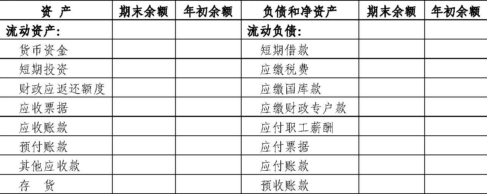
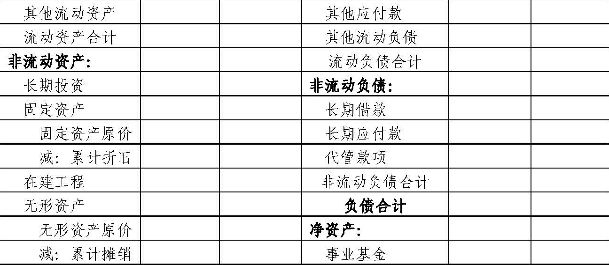
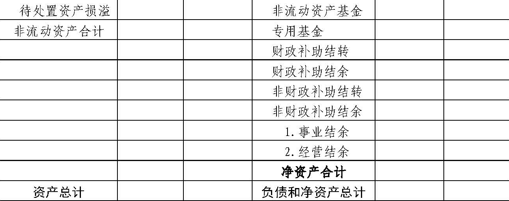
|
收入支出表（月度）
| 编制单位： | ＿＿＿＿年＿＿月 | 会高校02表
单位：元 |
|
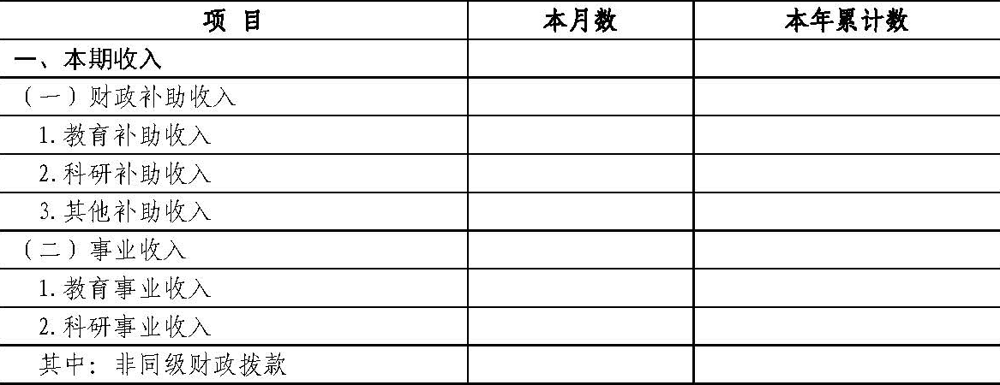
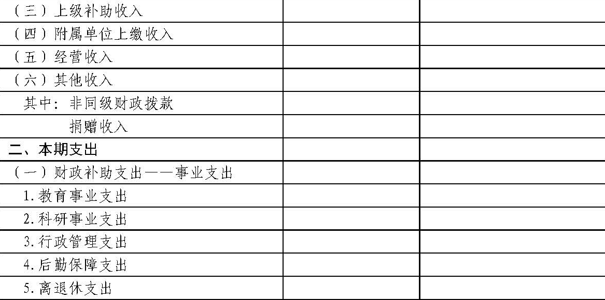
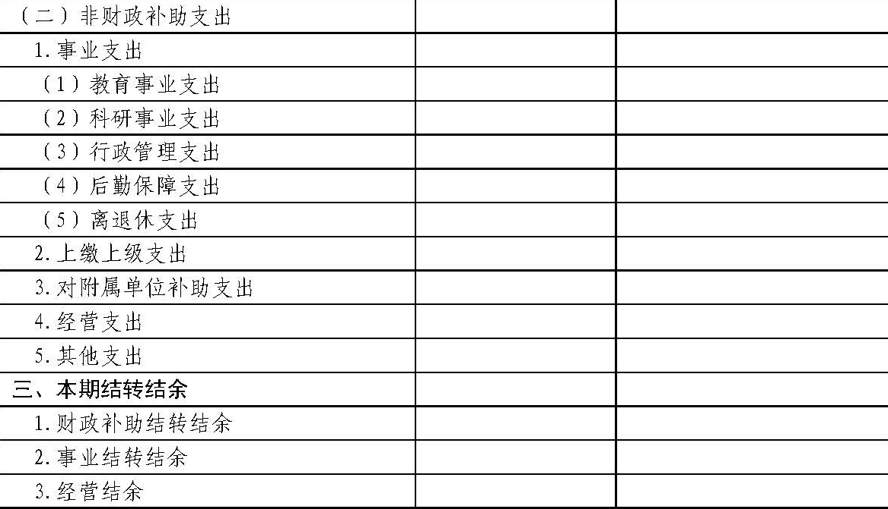
|
收入支出表（年度）
| 编制单位： | ＿＿＿＿年度 | 会高校02表
单位：元 |
|
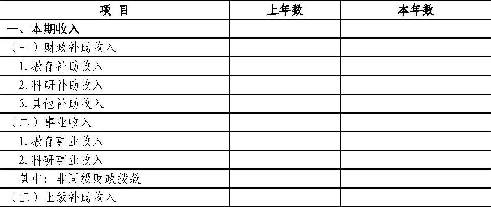
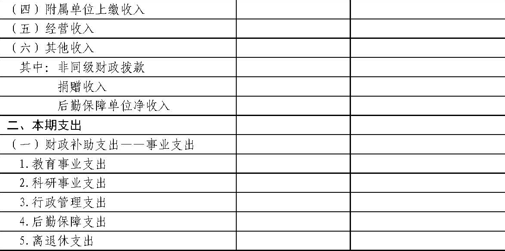
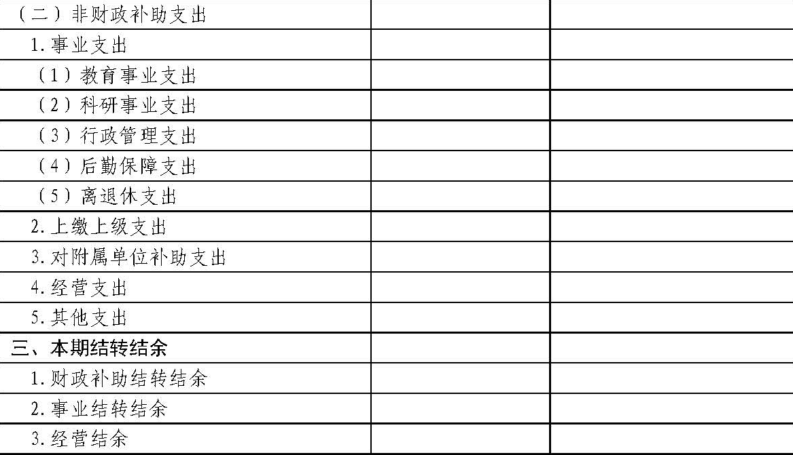
|
财政补助收入支出表
| 编制单位： | ＿＿＿＿年度 | 会高校03表
单位：元 |
 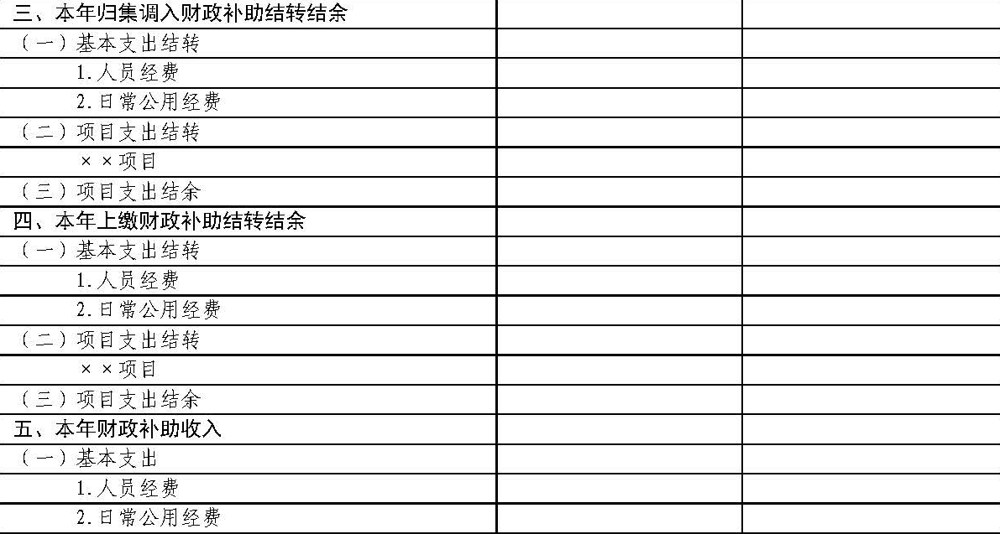
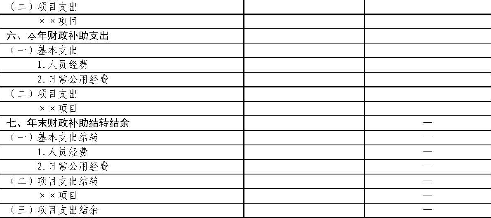
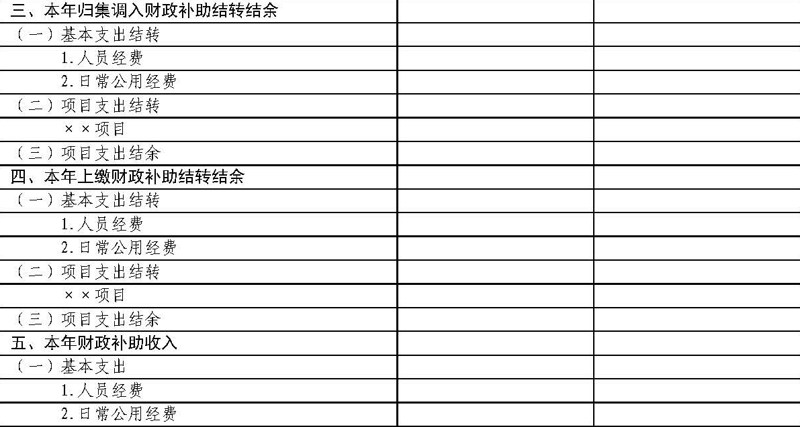
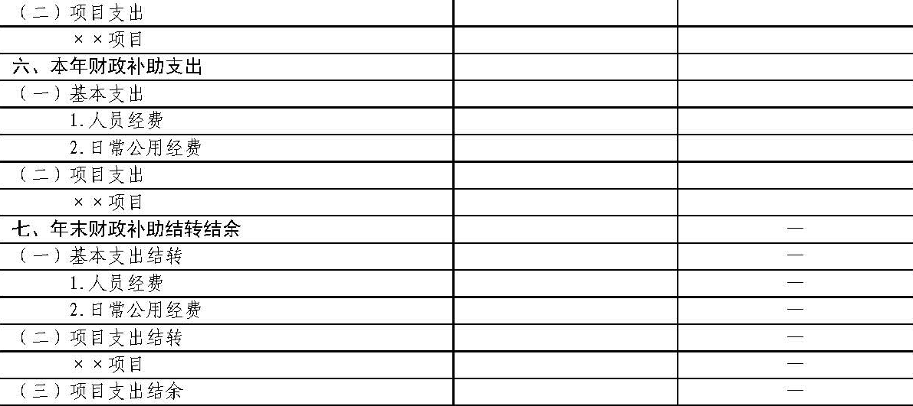
|
第五部分 财务报表编制说明
一、资产负债表编制说明
（一）本表反映高等学校在某一特定日期全部资产、负债和净资产的情况。
（二）本表“年初余额”栏内各项数字，应当根据上年年末资产负债表“期末余额”栏内数字填列。如果本年度资产负债表规定的各个项目的名称和内容同上年度不相一致，应对上年年末资产负债表各项目的名称和数字按照本年度的规定进行调整，填入本表“年初余额”栏内。
（三）本表“期末余额”栏各项目的内容和填列方法：
1.资产类项目
（1）“货币资金”项目，反映高等学校期末库存现金、银行存款和零余额账户用款额度的合计数。本项目应当根据“库存现金”、“银行存款”、“零余额账户用款额度”科目的期末余额合计填列。
（2）“短期投资”项目，反映高等学校期末持有的短期投资成本。本项目应当根据“短期投资”科目的期末余额填列。
（3）“财政应返还额度”项目，反映高等学校期末财政应返还额度的金额。本项目应当根据“财政应返还额度”科目的期末余额填列。
（4）“应收票据”项目，反映高等学校期末持有的应收票据的票面金额。本项目应当根据“应收票据”科目的期末余额填列。
（5）“应收账款”项目，反映高等学校期末尚未收回的应收账款余额。本项目应当根据“应收账款”科目的期末余额填列。
（6）“预付账款”项目，反映高等学校按照购货、劳务合同或协议规定预付给供应单位的款项。本项目应当根据“预付账款”科目的期末余额填列。
（7）“其他应收款”项目，反映高等学校期末尚未收回的其他应收款余额。本项目应当根据“其他应收款”科目的期末余额填列。
（8）“存货”项目，反映高等学校期末为开展业务活动及其他活动耗用而储存的各种材料、燃料、包装物、低值易耗品及达不到固定资产标准的用具、装具、动植物等的实际成本。本项目应当根据“存货”科目的期末余额填列。
（9）“其他流动资产”项目，反映高等学校除上述各项之外的其他流动资产，如将在1年内（含1年）到期的长期债券投资。本项目应当根据“长期投资”等科目的期末余额分析填列。
（10）“长期投资”项目，反映高等学校持有时间超过1年（不含1年）的股权和债权性质的投资。本项目应当根据“长期投资”科目期末余额减去其中将于1年内（含1年）到期的长期债券投资余额后的金额填列。
（11）“固定资产”项目，反映高等学校期末各项固定资产的账面价值。本项目应当根据“固定资产”科目期末余额减去“累计折旧”科目期末余额后的金额填列。
“固定资产原价”项目，反映高等学校期末各项固定资产的原价。本项目应当根据“固定资产”科目的期末余额填列。
“累计折旧”项目，反映高等学校期末各项固定资产的累计折旧。本项目应当根据“累计折旧”科目的期末余额填列。
（12）“在建工程”项目，反映高等学校期末尚未完工交付使用的在建工程发生的实际成本。本项目应当根据“在建工程”科目的期末余额填列。
（13）“无形资产”项目，反映高等学校期末持有的各项无形资产的账面价值。本项目应当根据“无形资产”科目期末余额减去“累计摊销”科目期末余额后的金额填列。
“无形资产原价”项目，反映高等学校期末持有的各项无形资产的原价。本项目应当根据“无形资产”科目的期末余额填列。
“累计摊销”项目，反映高等学校期末各项无形资产的累计摊销。本项目应当根据“累计摊销”科目的期末余额填列。
（14）“待处置资产损溢”项目，反映高等学校期末待处置资产的价值及处置损溢。本项目应当根据“待处置资产损溢”科目的期末借方余额填列；如“待处置资产损溢”科目期末为贷方余额，则以“-”号填列。
（15）“非流动资产合计”项目，按照“长期投资”、“固定资产”、“在建工程”、“无形资产”、“待处置资产损溢”项目金额的合计数填列。
2.负债类项目
（16）“短期借款”项目，反映高等学校向银行等金融机构借入的期限在1年内（含1年）的各种借款本金。本项目应当根据“短期借款”科目的期末余额填列。
（17）“应缴税费”项目，反映高等学校应缴未缴的各种税费。本项目应当根据“应缴税费”科目的期末贷方余额填列；如“应缴税费”科目期末为借方余额，则以“-”号填列。
（18）“应缴国库款”项目，反映高等学校按规定应缴入国库的款项（应缴税费除外）。本项目应当根据“应缴国库款”科目的期末余额填列。
（19）“应缴财政专户款”项目，反映高等学校按规定应缴入财政专户的款项。本项目应当根据“应缴财政专户款”科目的期末余额填列。
（20）“应付职工薪酬”项目，反映高等学校按有关规定应付给职工及为职工支付的各种薪酬。本项目应当根据“应付职工薪酬”科目的期末余额填列。
（21）“应付票据”项目，反映高等学校期末应付票据的票面金额。本项目应当根据“应付票据”科目的期末余额填列。
（22）“应付账款”项目，反映高等学校期末尚未支付的应付账款的金额。本项目应当根据“应付账款”科目的期末余额填列。
（23）“预收账款”项目，反映高等学校期末按合同或协议规定预收但尚未实际结算的款项。本项目应当根据“预收账款”科目的期末余额填列。
（24）“其他应付款”项目，反映高等学校期末应付未付的其他各项应付及暂收款项。本项目应当根据“其他应付款”科目的期末余额填列。
（25）“其他流动负债”项目，反映高等学校除上述各项之外的其他流动负债，如承担的将于1年内（含1年）偿还的长期负债。本项目应当根据“长期借款”、“长期应付款”等科目的期末余额分析填列。
（26）“长期借款”项目，反映高等学校向银行等金融机构借入的期限超过1年（不含1年）的各项借款本金。本项目应当根据“长期借款”科目的期末余额减去其中将于1年内（含1年）到期的长期借款余额后的金额填列。
（27）“长期应付款”项目，反映高等学校发生的偿还期限超过1年（不含1年）的各种应付款项。本项目应当根据“长期应付款”科目的期末余额减去其中将于1年内（含1年）到期的长期应付款余额后的金额填列。
（28）“代管款项”项目，反映高等学校接受委托代为管理的各类款项。本项目应当根据“代管款项”科目的期末余额填列。
3.净资产类项目
（29）“事业基金”项目，反映高等学校期末拥有的非限定用途的净资产。本项目应当根据“事业基金”科目的期末余额填列。
（30）“非流动资产基金”项目，反映高等学校期末非流动资产占用的金额。本项目应当根据“非流动资产基金”科目的期末余额填列。
（31）“专用基金”项目，反映高等学校按规定设置或提取的具有专门用途的净资产。本项目应当根据“专用基金”科目的期末余额填列。
（32）“财政补助结转”项目，反映高等学校滚存的财政补助结转资金。本项目应当根据“财政补助结转”科目的期末余额填列。
（33）“财政补助结余”项目，反映高等学校滚存的财政补助项目支出结余资金。本项目应当根据“财政补助结余”科目的期末余额填列。
（34）“非财政补助结转”项目，反映高等学校滚存的非财政补助专项结转资金。本项目应当根据“非财政补助结转”科目的期末余额填列。
（35）“非财政补助结余”项目，反映高等学校自年初至报告期末累计实现的非财政补助结余弥补以前年度经营亏损后的余额。本项目应当根据“事业结余”、“经营结余”科目的期末余额合计填列；如“事业结余”、“经营结余”科目的期末余额合计为亏损数，则以“-”号填列。在编制年度资产负债表时，本项目金额一般应为“0”；如不为“0”，本项目金额应为“经营结余”科目的期末借方余额（以“-”号填列）。
“事业结余”项目，反映高等学校自年初至报告期末累计实现的事业结余。本项目应当根据“事业结余”科目的期末余额填列；如“事业结余”科目的期末余额为亏损数，则以“-”号填列。在编制年度资产负债表时，本项目金额应为“0”。
“经营结余”项目，反映高等学校自年初至报告期末累计实现的经营结余弥补以前年度经营亏损后的余额。本项目应当根据“经营结余”科目的期末余额填列；如“经营结余”科目的期末余额为亏损数，则以“-”号填列。在编制年度资产负债表时，本项目金额一般应为“0”；如不为“0”，本项目金额应为“经营结余”科目的期末借方余额（以“-”号填列）。
（四）在编制年末资产负债表时，应将各校内独立核算单位的资产、负债和净资产并入本表的相应项目，并抵销高等学校内部业务或事项对本表的影响。
二、收入支出表（月度）编制说明
（一）本表反映高等学校某一月度各项收入、支出和结转结余情况。
（二）本表“本月数”栏反映各项目的本月实际发生数；本表“本年累计数”栏反映各项目自年初起至报告期末止的累计实际发生数。
（三）本表“本月数”栏各项目的内容和填列方法：
1.本期收入
（1）“本期收入”项目，反映高等学校本期收入总额。本项目应当根据本表中“财政补助收入”、“事业收入”、“上级补助收入”、“附属单位上缴收入”、“经营收入”和“其他收入”项目金额的合计数填列。
（2）“财政补助收入”项目，反映高等学校本期从同级财政部门取得的各类财政拨款。本项目应当根据“财政补助收入”科目的本期发生额填列。
“教育补助收入”、“科研补助收入”和“其他补助收入”项目，分别反映高等学校本期从同级财政部门取得的用于教学、科研和其他活动的财政拨款。该3个项目应当分别根据“财政补助收入”科目下“支出功能分类”的相关明细科目的本期发生额分析计算填列。
（3）“事业收入”项目，反映高等学校本期开展教学、科研活动及其辅助活动取得的收入。本项目应当根据本项目下“教育事业收入”、“科研事业收入”项目金额的合计数填列。
“教育事业收入”项目，反映高等学校本期开展教学及其辅助活动取得的收入。本项目应当根据“教育事业收入”科目的本期发生额填列。
“科研事业收入”项目，反映高等学校本期开展科研及其辅助活动取得的收入。其中，“非同级财政拨款”项目，反映高等学校本期因开展科研及其辅助活动从非同级财政部门取得的经费拨款。“科研事业收入”项目及其中的“非同级财政拨款”项目应当根据“科研事业收入”科目及其所属“非同级财政拨款”明细科目的本期发生额填列。
（4）“上级补助收入”项目，反映高等学校本期从主管部门和上级单位取得的非财政补助收入。本项目应当根据“上级补助收入”科目的本期发生额填列。
（5）“附属单位上缴收入”项目，反映高等学校附属单位本期按照有关规定上缴的收入。本项目应当根据“附属单位上缴收入”科目的本期发生额填列。
（6）“经营收入”项目，反映高等学校本期在教学、科研活动及其辅助活动之外开展非独立核算经营活动取得的收入。本项目应当根据“经营收入”科目的本期发生额填列。
（7）“其他收入”项目，反映高等学校本期除财政补助收入、教育事业收入、科研事业收入、上级补助收入、附属单位上缴收入、经营收入以外的其他收入。本项目应当根据“其他收入”科目的本期发生额填列。
“非同级财政拨款”项目，反映高等学校从非同级财政部门取得的不属于科研事业收入的经费拨款。本项目应当根据“其他收入”科目所属“非同级财政拨款”明细科目的本期发生额填列。
“捐赠收入”项目，反映高等学校接受现金、存货捐赠取得的收入。本项目应当根据“其他收入”科目所属相关明细科目的本期发生额填列。
2.本期支出
（8）“本期支出”项目，反映高等学校本期支出总额。本项目应当根据本表中“财政补助支出——事业支出”、“非财政补助支出”项目金额的合计数填列。
（9）“财政补助支出——事业支出”项目，反映高等学校本期使用财政补助资金发生的事业活动支出。本项目应当根据本项目下“教育事业支出”、“科研事业支出”、“行政管理支出”、“后勤保障支出”、“离退休支出”项目金额的合计数填列。
“教育事业支出”、“科研事业支出”、“行政管理支出”、“后勤保障支出”、“离退休支出”项目，分别反映高等学校本期使用财政补助发生的教育、科研、行政管理、后勤保障、离退休等各项事业支出。该5个项目应当分别根据“教育事业支出”、“科研事业支出”、“行政管理支出”、“后勤保障支出”、“离退休支出”科目下“财政补助支出”明细科目的本期发生额分析计算填列。
（10）“非财政补助支出”项目，反映高等学校本期使用财政补助以外的资金发生的支出。本项目应当根据本项目下“事业支出”、“上缴上级支出”、“对附属单位补助支出”、“经营支出”、“其他支出”项目金额的合计数填列。
“事业支出”项目，反映高等学校本期使用财政补助以外的资金发生的事业支出。本项目应当根据本项目下“教育事业支出”、“科研事业支出”、“行政管理支出”、“后勤保障支出”、“离退休支出”项目金额的合计数填列。其中，“教育事业支出”、“科研事业支出”、“行政管理支出”、“后勤保障支出”、“离退休支出”项目，分别反映高等学校本期使用财政补助以外的资金发生的教育、科研、行政管理、后勤保障、离退休等各项事业支出。该5个项目应当分别根据“教育事业支出”、“科研事业支出”、“行政管理支出”、“后勤保障支出”、“离退休支出”科目下“非财政专项资金支出”、“其他资金支出”明细科目的本期发生额合计填列。
“上缴上级支出”项目，反映高等学校本期按照财政部门和主管部门的规定上缴上级单位的支出。本项目应当根据“上缴上级支出”科目的本期发生额填列。
“对附属单位补助支出”项目，反映高等学校本期用财政补助收入之外的收入对附属单位补助发生的支出。本项目应当根据“对附属单位补助支出”科目的本期发生额填列。
“经营支出”项目，反映高等学校本期在教学、科研活动及其辅助活动之外开展非独立核算经营活动发生的支出。本项目应当根据“经营支出”科目的本期发生额填列。
“其他支出”项目，反映高等学校本期除教育事业支出、科研事业支出、行政管理支出、后勤保障支出、离退休支出、上缴上级支出、对附属单位补助支出、经营支出以外的其他支出。本项目应当根据“其他支出”科目的本期发生额填列。
3.本期结转结余
（11）“本期结转结余”项目，反映高等学校本期各项收支相抵后的余额。本项目应当根据本项目下“财政补助结转结余”、“事业结转结余”、“经营结余”项目金额的合计数填列；如为负数，以“-”号填列。
（12）“财政补助结转结余”项目，反映高等学校本期财政补助收入与财政补助支出相抵后的余额。本项目应当根据本表中“财政补助收入”项目金额减去“财政补助支出——事业支出”项目金额后的余额填列。
（13）“事业结转结余”项目，反映高等学校本期除财政补助收支、经营收支以外的各项收支相抵后的余额。本项目应当根据本表中“事业收入”、“上级补助收入”、“附属单位上缴收入”、“其他收入”项目金额合计数减去“事业支出”、“上缴上级支出”、“对附属单位补助支出”、“其他支出”项目金额合计数后的余额填列；如为负数，以“-”号填列。
（14）“经营结余”项目，反映高等学校本期经营收支相抵后的余额。本项目应当按照本表中“经营收入”项目金额减去“经营支出”项目金额后的余额填列；如为负数，以“-”号填列。
（四）本表“本年累计数”栏各项目应当根据各项目的本月数与上一月度收入支出表中相应项目的本年累计数的合计数填列。
三、收入支出表（年度）编制说明
（一）本表反映高等学校某一会计年度各项收入、支出和结转结余情况，以及年末非财政补助结余的分配情况。
（二）本表“上年数”栏反映各项目上年度的实际发生数；如果本年度收入支出表规定的各个项目的名称和内容同上年度不一致，应对上年度收入支出表各项目的名称和数字按照本年度的规定进行调整，填入本年度收入支出表的“上年数”栏。
本表“本年数”栏反映各项目本年度的实际发生数。
（三）本表“本年数”栏各项目的内容和填列方法：
1.本期收入
“本期收入”部分除“后勤保障单位净收入”项目外的其他各项目的内容和填列方法，同月度本表（1）至（7）项编制说明。
2.本期支出
“本期支出”部分各项目的内容和填列方法，同月度本表（8）至（10）项编制说明。
3.本期结转结余
“本期结转结余”部分各项目的内容和填列方法，同月度本表（11）至（14）项编制说明。
4.弥补以前年度经营亏损后的经营结余
（15）“弥补以前年度经营亏损后的经营结余”项目，反映高等学校本年度实现的经营结余扣除本年初未弥补经营亏损后的余额。本项目应当根据本表“经营结余”项目金额减去“经营结余”科目本年初借方余额后的金额填列；如为负数，以“-”号填列。
5.本年非财政补助结转结余
（16）“本年非财政补助结转结余”项目，反映高等学校本年除财政补助结转结余之外的结转结余金额。如本表中“弥补以前年度经营亏损后的经营结余”项目为正数，本项目应当根据本表中“事业结转结余”、“弥补以前年度经营亏损后的经营结余”项目金额的合计数填列；如为负数，以“-”号填列。如本表中“弥补以前年度经营亏损后的经营结余”项目为负数，本项目应当根据本表中“事业结转结余”项目金额填列；如为负数，以“-”号填列。
（17）“非财政补助结转”项目，反映高等学校本年除财政补助收支以外的各项专项资金收入减去各项专项资金支出后的余额。本项目应根据“非财政补助结转”科目本年贷方发生额中专项资金收入转入金额合计数减去本年借方发生额中专项资金支出转入金额合计数后的余额填列。
6.本年非财政补助结余
（18）“本年非财政补助结余”项目，反映高等学校本年除财政补助之外的其他结余金额。本项目应当根据本表中“本年非财政补助结转结余”项目金额减去“非财政补助结转”项目金额后的金额填列；如为负数，以“-”号填列。
（19）“应缴企业所得税”项目，反映高等学校按照税法规定应缴纳的企业所得税金额。本项目应当根据“非财政补助结余分配”科目的本年发生额分析填列。
（20）“提取专用基金”项目，反映高等学校本年按规定提取的专用基金金额。本项目应当根据“非财政补助结余分配”科目的本年发生额分析填列。
7.转入事业基金
（21）“转入事业基金”项目，反映高等学校本年按规定转入事业基金的非财政补助结余资金。本项目应当根据本表中“本年非财政补助结余”项目金额减去“应缴企业所得税”、“提取专用基金”项目金额后的余额填列；如为负数，以“-”号填列。
（四）对于各校内独立核算单位本年度的收入、支出、结转结余及年末非财政补助结余的分配情况，应当纳入本表的相应项目反映。将各校内独立核算单位的收入、支出纳入本表的方法如下：
1.对于具有后勤保障职能的校内独立核算单位3，应将其本年收入（不含从学校取得的补贴经费）、支出（不含使用学校补贴经费发生的支出）相抵后的净额计入本表中“其他收入”项目金额，并单独填列于该项目下的“后勤保障单位净收入”项目。如具有后勤保障职能的全部校内独立核算单位本年收入、支出相抵后的净额合计数为负数，则以“-”号填列于“后勤保障单位净收入”项目。
2.对于不具有后勤保障职能的其他校内独立核算单位，应将其收入、支出并入本表的相应项目，并抵销高等学校内部业务或事项对本表的影响。
3.具有后勤保障职能的校内独立核算单位一般指校医院、食堂、水电暖中心、物业管理中心、宿舍管理中心等。
四、财政补助收入支出表编制说明
（一）本表反映高等学校某一会计年度财政补助收入、支出、结转及结余情况。
（二）本表“上年数”栏内各项数字，应当根据上年度财政补助收入支出表“本年数”栏内数字填列。
（三）本表“本年数”栏各项目的内容和填列方法：
1.“年初财政补助结转结余”项目及其所属各明细项目，反映高等学校本年初财政补助结转和结余余额。各项目应当根据上年度财政补助收入支出表中“年末财政补助结转结余”项目及其所属各明细项目“本年数”栏的数字填列。
2.“调整年初财政补助结转结余”项目及其所属各明细项目，反映高等学校因本年发生需要调整以前年度财政补助结转结余的事项，而对年初财政补助结转结余的调整金额。各项目应当根据“财政补助结转”、“财政补助结余”科目及其所属明细科目的本年发生额分析填列。如调整减少年初财政补助结转结余，以“-”号填列。
3.“本年归集调入财政补助结转结余”项目及其所属各明细项目，反映高等学校本年度取得主管部门归集调入的财政补助结转结余资金或额度金额。各项目应当根据“财政补助结转”、“财政补助结余”科目及其所属明细科目的本年发生额分析填列。
4.“本年上缴财政补助结转结余”项目及其所属各明细项目，反映高等学校本年度按规定实际上缴的财政补助结转结余资金或额度金额。各项目应当根据“财政补助结转”、“财政补助结余”科目及其所属明细科目的本年发生额分析填列。
5.“本年财政补助收入”项目及其所属各明细项目，反映高等学校本年度从同级财政部门取得的各类财政拨款金额。各项目应当根据“财政补助收入”科目及其所属明细科目的本年发生额填列。
6.“本年财政补助支出”项目及其所属各明细项目，反映高等学校本年度发生的财政补助支出金额。各项目应当根据“教育事业支出”、“科研事业支出”、“行政管理支出”、“后勤保障支出”、“离退休支出”科目所属明细科目本年发生额中的财政补助支出数的合计数填列。
7.“年末财政补助结转结余”项目及其所属各明细项目，反映高等学校截至本年末的财政补助结转和结余余额。各项目应当根据“财政补助结转”、“财政补助结余”科目及其所属明细科目的年末余额填列。
五、附注
高等学校的会计报表附注至少应当披露下列内容：
（一）遵循《事业单位会计准则》、《高等学校会计制度》的声明；
（二）学校整体财务状况、业务活动情况的说明；
（三）会计报表中列示的重要项目的进一步说明，包括其主要构成、增减变动情况等；
（四）重要资产处置情况的说明；
（五）重大投资、借款活动的说明；
（六）以名义金额计量的资产名称、数量等情况，以及以名义金额计量理由的说明；
（七）以前年度结转结余调整情况的说明；
（八）将校内独立核算单位会计信息纳入学校财务报表情况的说明，包括将校内独立核算单位资产、负债和净资产并入学校资产负债表时对内部业务或事项抵销处理的情况，具有后勤保障职能的各校内独立核算单位本年收入、支出情况，将不具有后勤保障职能的其他校内独立核算单位的收入、支出并入学校收入支出表时对内部业务或事项抵销处理的情况，以及因将校内独立核算单位的收入、支出纳入学校收入支出表而对收入支出表中各项结转结余金额以及非财政补助结余形成与分配各项目金额的影；
（九）有助于理解和分析会计报表需要说明的其他事项。